stars_data <- readr::read_csv(here::here("data/stars_cfa_data.csv")) |>
dplyr::select(stars_int_3,
stars_int_11,
stars_int_1,
stars_int_6,
stars_int_5,
stars_int_2,
stars_test_3,
stars_test_6,
stars_test_4,
stars_test_1,
stars_test_8,
stars_help_2,
stars_help_1,
stars_help_3,
stars_help_4)8 Confirmatory Factor Analysis
8.1 CFA (Week 8) Overview
Learning Objectives
By the end of the Week 8 tutorial & workshop, students will be able to:
Explain the purpose of confirmatory factor analysis (CFA) and distinguish it from exploratory factor analysis (EFA).
Assess a dataset’s suitability for CFA, including evaluating sample size, scale type, missing data, and distributional assumptions.
Specify a theoretically justified measurement model, choose factor scaling methods, and select an appropriate estimator.
Fit a CFA model and critically evaluate local and global model fit, including factor loadings, R², correlations, and fit indices (χ², CFI, TLI, RMSEA, SRMR).
Identify and address potential model misfit, improper solutions, and modification indices to refine the model while maintaining theoretical coherence.
Report CFA results clearly and transparently, detailing model specification, estimation, parameter estimates, fit indices, and any justified modifications.
Structure
Section 1: Lecture
- Part 1: Understanding CFA - an introduction to the core conceptual and statistical foundations of CFA.
Section 2: Code Walkthrough
- Part 2: Conducting a CFA - how to understand and conduct each step of a comprehensive CFA using the
lavaanpackage in R, from pre-analysis checks to interpretation and reporting.
Section 3: Worksheet
- Part 3: Worksheet - a series of exercises for you to practice conducting a CFA.
8.2 Introduction
Scale Development Process (Recap)
You may remember from EFA week that developing a psychological scale is a multi-stage process that moves from theory to statistical testing and back again and that, generally speaking, it should follow these key phases:
Define the construct
Generate items
Collect data
Explore scale structure and remove problematic items (EFA)
Evaluate internal consistency of the factors (reliability analysis)
Collect new data (or split the EFA data and use the remaining portion)
Evaluate the factor structure suggested by EFA using confirmatory factor analysis (CFA)
Evaluate whether the scale measures the same construct in the same way across groups (measurement invariance; MI)
Collect new data (ideal, but rare in practice)
- Examine validity evidence (e.g., convergent/discriminant validity, criterion validity)
Ongoing validity and generalisabilty checks (also rare in practice)
- Evaluate and refine the scale across new samples, contexts, and time
This week, we’re going to evaluate the factor structure suggested by last week’s EFAs using CFA.
8.3 Part 1: Understanding CFA
Conceptual Foundations
What is CFA & Why Do We Use It?
Confirmatory Factor Analysis (CFA) is a statistical technique used to test whether your data fit a pre-specified measurement model.
That “pre-specified” bit is everything.
In CFA, you decide in advance:
How many latent factors exist
Which items load onto which factor
Which loadings are fixed to zero (i.e., which items should not measure the latent factor)
Whether and which factors correlate
Whether residuals correlate (when two items share something in common that your factors don’t capture)
You are not asking: “What structure is hiding in my data?”.
You are asking: “Does my theoretically specified structure hold up?”.
How is CFA Different from EFA?
Exploratory Factor Analysis (EFA) = discovery mode
All items can load on all factors
Structure emerges from the data
Used when theory is weak or unclear
CFA = hypothesis-testing mode
Items are restricted to load only on specified factors
Cross-loadings are usually fixed to zero
The model is evaluated against the data
If EFA is “What’s in here?”, CFA is “Does this match what we expected?”.
EFA builds the map. CFA checks if the map is accurate.
The Measurement Model
In CFA, we assume that latent variables (e.g., anxiety, motivation, identity, IQ, attraction) are not directly observed (just like EFA).
Instead, we measure them using observed variables (aka ‘items’, ‘indicators’), which are treated as imperfect indicators of the underlying construct.
For example, when modelling something like depression, we assume that questionnaire items (e.g., “I feel sad”, “I struggle to enjoy things”) are reflections of an underlying latent construct called depression.
The way those items relate to the latent variable — for example, which items belong to which factors and how strongly they load — is known as the measurement model (aka ‘structural model’).
Importantly, these assumptions are not unique to CFA. They come from the common factor model, which underlies both EFA and CFA.
The key difference between EFA and CFA is not the idea of latent variables, but how much structure the researcher specifies in advance.
Types of Measurement Model
There are several core measurement model structures that we can implement to test different theories.
We can’t get through all of them in detail on this course, but it is still worth knowing what they all look like and what they do.
If you want to learn more about higher order or bifactor models (and a whole bunch of other cool stuff!) I recommend Erin Buchanen’s open materials: https://statisticsofdoom.com/page/structural-equation-modeling/.
One-Factor Model
All items (observed variables) load onto a single (latent) factor
One underlying construct explains the covariance among all items
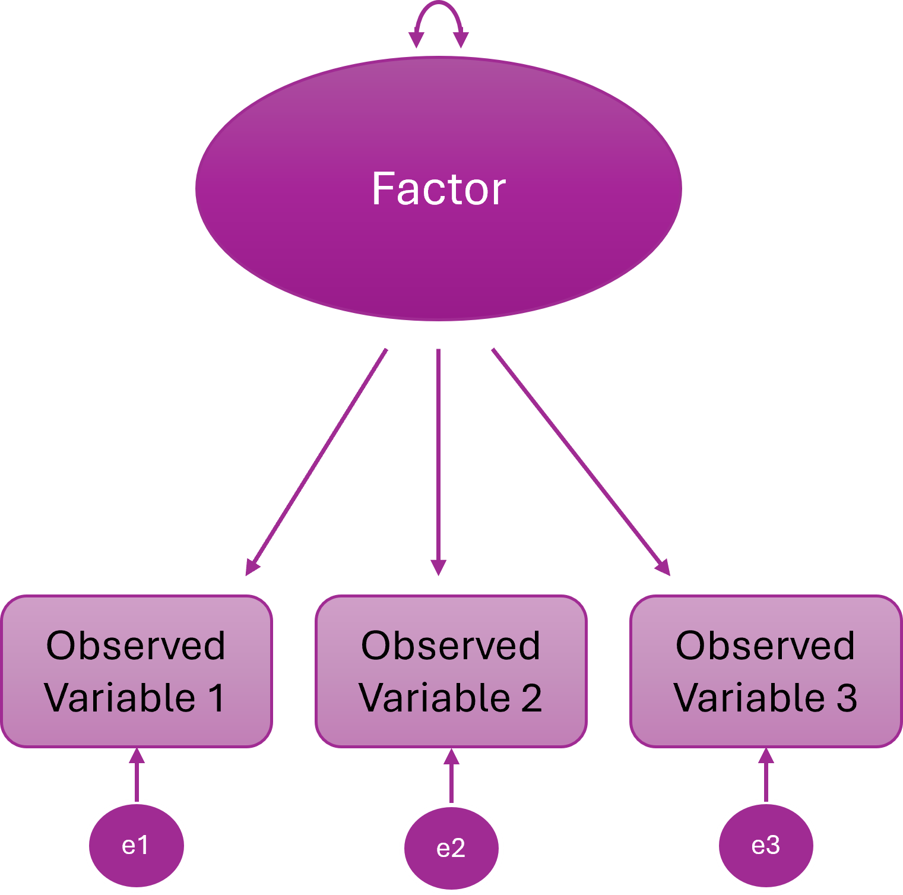
Two-Factor Model
Items cluster onto two different latent variables
Two distinct constructs explain the item correlations
The two latent variables are statistically independent
In other words, people high on F1 are not systematically higher or lower on F2
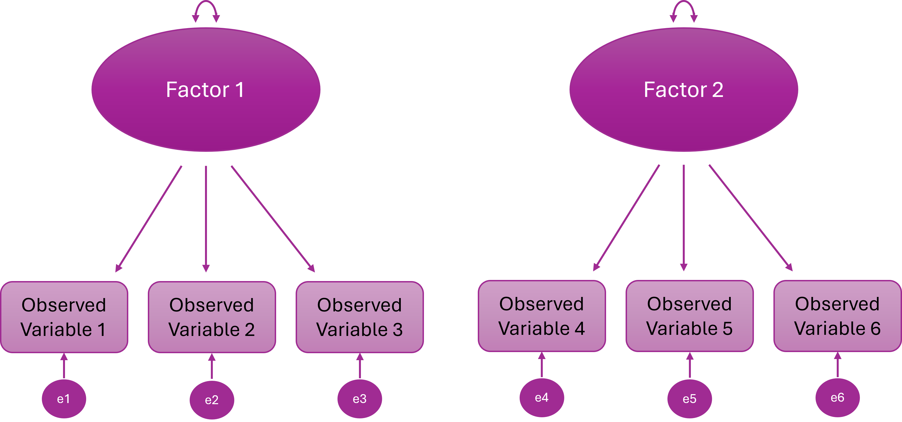
Higher Order (Hierarchical) Factor Model
A higher-order general factor explains why the lower-order factors correlate
Items load onto first-order factors; First-order factors load onto the higher order factor
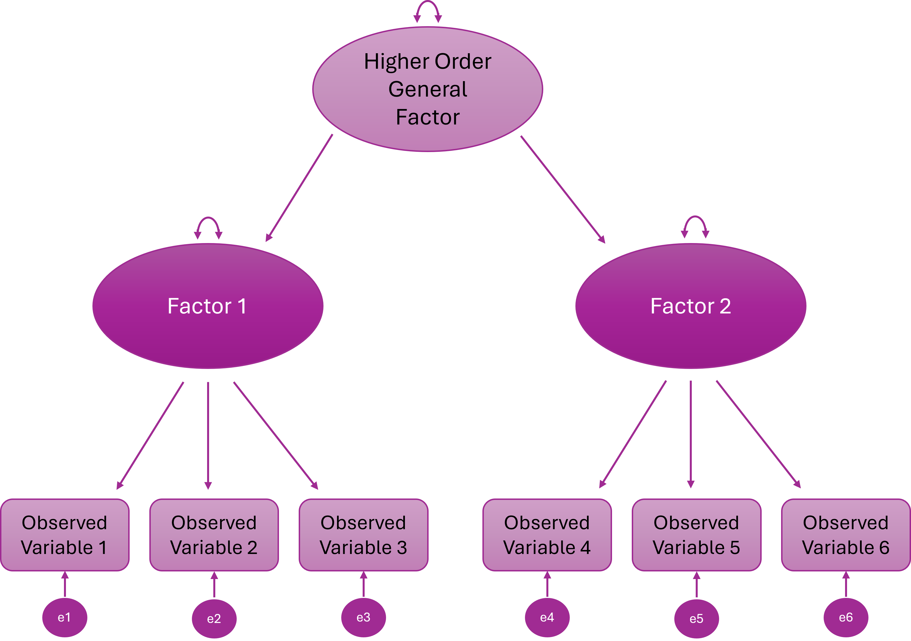
Bifactor Model
Every item loads on a general factor and one specific factor
The general and specific factors are orthogonal (uncorrelated)
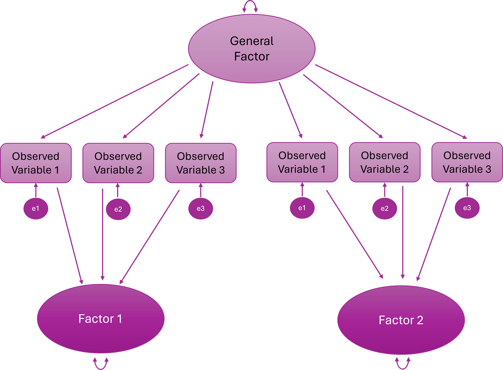
What Can CFA Do?
1. Test Theories
If a theory says, for example:
There are 3 distinct constructs
Each has specific indicators
They are correlated but distinct
CFA lets you test whether that structure actually fits.
If it doesn’t fit? The theory — or the measurement model — needs revisiting.
When we are using CFA for scale development and we want to test the factor structure derived from an EFA, we are testing theory.
2. Validate Scales
Suppose you’re using a published questionnaire in your research.
You might want to make sure that the proposed factor structure replicates in your sample.
CFA is advisable (but very rarely done!) before running running linear — or other kinds of — models.
If the measurement model is wrong, everything built on top of it is shaky.
Testing the validity of existing scales can be very important, publishable work in its own right.
3. Compare Competing Models
CFA allows formal model comparisons, such as:
One-factor vs two-factor models
Correlated factors vs higher-order factor models
Bifactor vs correlated-factor structures
Instead of arguing conceptually, you can test which model fits better statistically.
3. Test Measurement Invariance
CFA is the backbone of measurement invariance testing.
You can test whether:
Factor loadings are equal across groups
Intercepts / thresholds are equal
Residual variances are equal
Without CFA, you cannot properly test whether a scale operates equivalently across groups.
Statistical Foundations
CFA is a very specific statistical model for explaining the relationships between observed variables.
At its core, CFA is about one thing: Can a small number of latent variables reproduce the covariance matrix we observe in our data?
The Core Idea: Reproducing the Covariance Matrix
CFA does not try to reproduce raw scores. It tries to reproduce the covariance matrix.
Why? Because covariances tell us how variables relate to each other, and factor models are fundamentally models of shared variance.
In CFA, we:
Propose a measurement model
Use it to generate an implied covariance matrix (the model)
Compare that implied matrix to the observed covariance matrix (the data)
Assess how close they are
If they’re close enough → the model “fits”.
In practice, we rarely reproduce the covariance matrix perfectly. Instead, we evaluate whether the discrepancies between the observed and model-implied matrices are small enough to consider the model plausible.
Structural Equation Modelling Framework
CFA sits within the broader framework of Structural Equation Modelling (SEM).
SEM allows researchers to:
model latent variables
estimate measurement error explicitly
test overall model fit
compare competing theoretical models
In CFA specifically, we are testing a measurement model — a model that specifies how observed variables relate to underlying latent constructs.
To do this, SEM represents the model using a set of equations that describe:
how observed variables are generated from latent factors, and
what relationships between variables the model predicts
These two ideas are captured by two key equations in the common factor model:
the measurement equation, which describes how latent variables produce observed indicators
the covariance equation, which describes the pattern of relationships the model implies between observed variables
Together, these equations define the model that CFA estimates.
The Measurement Model (Variable Level)
First, we describe how each observed variable is generated.
Conceptually, each observed variable is decomposed into:
a latent factor component
a residual (unique/error) component
In other words: observed score = shared variance (factor) + unique variance (error).
Measurement Equation of the Common Factor Model
The CFA model formalises this decomposition as:
\[ \mathbf{x} = \boldsymbol{\Lambda} \mathbf{\eta} + \boldsymbol{\epsilon} \]
Where:
x = vector of observed variables
Λ (Lambda) = matrix of factor loadings
η (eta) = vector of latent factors
ε (epsilon) = vector of residuals
This equation simply formalises: Each observed variable is a weighted combination of latent factors plus residual error.
The Covariance Equation (Relationship Level)
Once we assume that each observed variable is generated from latent factors plus residual error, we can derive what the covariance matrix of the observed variables should look like.
Items are related for two reasons:
They share common latent factors
They contain residual variance (measurement error and item-specific variance)
This means that: observed relationships between items = shared variance explained by factors + residual variance
CFA works by estimating parameters so that the relationships predicted by the model match the relationships observed in the data.
The Model-Implied Covariance Equation
Formally, the covariance matrix implied by the model is:
\[ \Sigma = \boldsymbol{\Lambda} \boldsymbol{\Phi} \boldsymbol{\Lambda}' + \boldsymbol{\Theta} \]
Where:
Λ = loading matrix
Φ (Phi) = covariance matrix of latent factors
Θ (Theta) = residual covariance matrix
This is the core engine of CFA: the model estimates parameters so that the model-implied covariance matrix closely matches the observed covariance matrix.
Statistical Assumptions
CFA rests on several statistical assumptions that underpin estimation and model fit:
Correct model specification
The hypothesised factor structure must reflect the true latent structure… well, formally at least…!
… in reality, we rarely know the true structure, so CFA is always an approximation based on theory or prior evidence (e.g., a previous EFA or well-established scales) and small discrepancies are expected
Independent observations
- Responses should not be dependent (e.g., no repeated measurements without accounting for clustering)
Distributional assumptions
- Standard ML requires multivariate normality and continuous indicators
- For ordinal or categorical items, robust estimators (WLSMV/DWLS) are preferred; these rely on polychoric correlations
- Relationships among variables should be roughly linear for continuous items or monotonic for ordinal items
Violations don’t automatically destroy the model — but they affect estimation and fit indices.
Practical Requirements / Design Considerations
These are also important to check before running CFA, but are not formal statistical assumptions.
Meaningful covariances between items
Items must share variance that can plausibly be explained by the latent factors.
If items are essentially uncorrelated, the model cannot capture meaningful structure, and fit indices will be poor.
Correlations across factors hint at theoretical overlap, which may require reconsidering your model or allowing factor correlations in CFA.
Rule of thumb: Each item should correlate moderately (r ≈ 0.3–0.8) with other items in the same factor.
Scale type
Data should be continuous, ordinal, or binary
Standard CFA cannot model nominal (unordered) categories or highly skewed continuous variables (they may require transformation or robust estimation)
If your items are ordinal (e.g., 5-point Likert), treating them as continuous may be acceptable under some conditions (e.g., ≥5 categories, reasonably symmetric distributions), but this is a judgement call, not a default.
Adequate sample size
Estimation and fit indices are sensitive to sample size, especially for complex models or weak loadings.
Adequacy depends on number of factors, indicators per factor, factor loadings, and estimator (so rules of thumb can be way off).
Practical minimum for most CFA models: ~200, but smaller samples can work for strong, simple models; larger samples are needed for weak loadings, complex models, or invariance testing.
Missing data
Inspect patterns of missingness before analysis.
Decide on handling strategy: e.g., FIML for continuous ML, pairwise approaches for WLSMV.
Ignoring systematic missingness can bias estimates and fit indices.
Identification
A CFA model must be identified for estimation to be possible.
Every parameter you estimate (factor loadings, factor variances/covariances, residual variances, thresholds/intercepts) consumes information from the data.
There must be more pieces of information (observed covariances and variances) than parameters to estimate.
Formally, the model must have positive degrees of freedom
If a model is not identified, the software cannot solve it — you might get errors or nonsensical parameter estimates, and no amount of “optimism” will help.
The degrees of freedom of a CFA model are calculated as:
\[ df = \text{Number of unique observed variances and covariances} - \text{Number of free parameters} \]
If
df < 0→ under-identified (cannot estimate)If
df = 0→ just-identified (fits perfectly, cannot test hypotheses)If
df > 0→ over-identified (testable, ideal)
What is a threshold?
In the context of CFA (and more broadly, ordinal or categorical data modeling), a threshold is essentially the boundary between categories on an observed ordinal variable. Let me break it down carefully:
Conceptual Explanation
Suppose you have an item with responses like: 1 = Strongly Disagree, 2 = Disagree, 3 = Neutral, 4 = Agree, 5 = Strongly Agree.
Ordinal items are thought of as arising from an underlying continuous latent response variable.
The thresholds define the points on this latent continuum where respondents typically transition from one category to the next.
Example:
Say you have a 5-point Likert item (1–5). The latent variable (attitude) is continuous. The model might estimate thresholds like this:
| Threshold | Meaning |
|---|---|
| τ₁ = -1.2 | Between category 1 and 2 |
| τ₂ = -0.3 | Between category 2 and 3 |
| τ₃ = 0.8 | Between category 3 and 4 |
| τ₄ = 2.0 | Between category 4 and 5 |
Interpretation:
Anyone with a latent score < -1.2 → observed category 1 (“Strongly Disagree”)
Between -1.2 and -0.3 → category 2 (“Disagree”)
Between -0.3 and 0.8 → category 3 (“Neutral”)
Between 0.8 and 2.0 → category 4 (“Agree”)
2.0 → category 5 (“Strongly Agree”)
Notice:
The observed labels are integers (1, 2, 3, 4, 5)
The thresholds are decimals on the latent variable scale.
Technical Explanation
In lavaan, when you set
ordered = TRUE, the model estimates thresholds for each ordinal variable.These thresholds are like cut-points on a latent continuous variable such that:
In CFA with ordinal items, the probability of observing category \(k\) or below is given by:
\[ P(Y \le k) = \Phi(\tau_k - \lambda \eta) \]
Where:
- \(Y\) is the observed ordinal response.
- \(k\) indexes the response category.
- \(\Phi\) is the standard normal cumulative distribution function (used in WLSMV estimation).
- \(\tau_k\) is the \(k\)th threshold.
- \(\lambda\) is the factor loading for the observed variable.
- \(\eta\) is the latent factor score.
Essentially, the thresholds map the continuous latent response onto discrete observed categories.
Takeaway
Thresholds are only relevant for ordinal/categorical items.
They are like invisible dividing lines along the latent variable that “decide” which response category is observed.
If you have continuous variables, there are no thresholds — the variable is measured directly.
8.4 Part 2: Conducting a CFA
CFA Process Overview
To run a CFA, you will usually complete the following steps:
Pre-analysis checks:
Theoretical model specification
Independent observations
Distributional assumptions
Meaningful covariances between items
Scale type
Sample size
Missing data inspection
Identification check (although a prerequisite, we check this after we’ve run the model)
Prepare the model:
Specify the measurement model
Decide on factor scaling method
Choose an estimator
Fit then check the model:
Check warnings
Check for improper solutions
Check potential misfit
Inspect parameter estimates (local fit):
Factor loadings
R-squared
Factor correlations
Evaluate model fit (global fit):
χ² test
CFI / TLI
RMSEA
SRMR
Model refinement (if justified):
Check modification indices
Re-fit and compare
Report (tables and in-text):
Model specification
Estimator used
Parameter estimates
Fit indices
Any modifications made
So, not much then!
We are now going to walk through how to complete each of these steps using the same worked example as last week.
The Statistics Anxiety Rating Scale (STARS)
Previously, we conducted an EFA on 23 items designed to measure three facets (subscales) of statistics anxiety. No items were reverse-scored.
Participants respond to each item with a 1 (low) to 5 (high) rating of how anxious they feel in each situation (making this a Likert scale).
From the EFA, we retained a three-factor solution that looked like this:
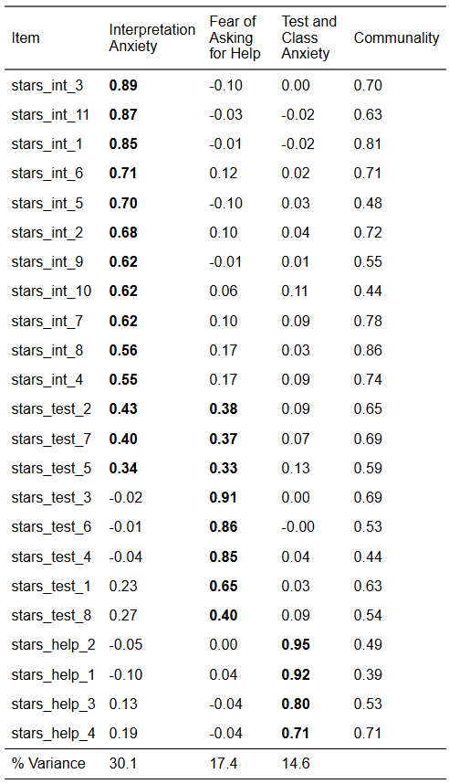
We are now going to test this structure with CFA. However, we are only going to model the first six items on the Interpretation Anxiety factor because a) there is no practical need for that many items, b) it gets rid of the problematic cross-loadings (which we would want to do anyway), and c) and it will save us some typing!
Our new hypothesised model looks like this:
| Variable | Subscale | Item |
| stars_int_3 | Interpretation Anxiety | Reading a journal article that includes some statistical analyses |
| stars_int_11 | Interpretation Anxiety | Trying to understand the statistical analyses described in the abstract of a journal article |
| stars_int_1 | Interpretation Anxiety | Interpreting the meaning of a table in a journal article |
| stars_int_6 | Interpretation Anxiety | Interpreting the meaning of a probability value once I have found it |
| stars_int_5 | Interpretation Anxiety | Reading an advertisement for a car which includes figures on miles per gallon, depreciation, etc. |
| stars_int_2 | Interpretation Anxiety | Making an objective decision based on empirical data |
| stars_test_3 | Test Anxiety | Doing an examination in a statistics course |
| stars_test_6 | Test Anxiety | Waking up in the morning on the day of a statistics test |
| stars_test_4 | Test Anxiety | Walking into the room to take a statistics test |
| stars_test_1 | Test Anxiety | Studying for an examination in a statistics course |
| stars_test_8 | Test Anxiety | Going over a final examination in statistics after it has been marked |
| stars_help_2 | Fear of Asking for Help | Asking one of my teachers for help in understanding statistical output |
| stars_help_1 | Fear of Asking for Help | Going to ask my statistics teacher for individual help with material I am having difficulty understanding |
| stars_help_3 | Fear of Asking for Help | Asking someone in the computer lab for help in understanding statistical output |
| stars_help_4 | Fear of Asking for Help | Asking a fellow student for help in understanding output |
Crucially, the data we are using for our CFA is a different sample to the data we used for our EFA.
Let’s read in the data, select only the variables we need, and check the sample size. Make a mental note of it for now.
Pre-Analysis Checks
Let’s start with out pre-analysis checks.
To recap, these are:
Theoretical model specification
Independent observations
Distributional assumptions
Meaningful covariances between items
Scale type
Sample size
Missing data inspection
Identification check
Theoretical Model Specification
🤔 Where will get our theoretical model from?
Solution
Our EFA! This is what we’re modelling:
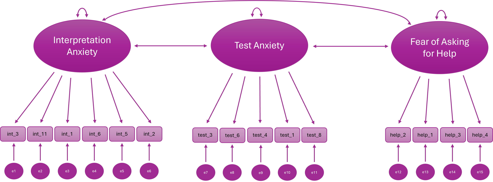
Distributional Assumptions
Our data is ordinal, so the distributional assumption we need to check is that the items have a monotonic relationship with the underlying latent factors.
To recap, a monotonic relationship can be thought of as the ordinal analogue of a linear relationship: higher (or lower) values on the latent factor are associated with correspondingly higher (or lower) values on the observed categories, preserving the rank order even if the relationship is not strictly linear.
In other words, the observed categories are ordered reflections of the underlying latent variable.
This is why we use polychoric correlations: they estimate the association between the latent continuous responses, not the raw ordinal numbers.
We don’t usually formally check monotonic relationships. Instead we look for stable, interpretable polychoric correlations.
What if our data were continuous?
Assumptions: multivariate normality, roughly linear relationships
Bivariate Linearity
Check Scatterplots of item pairs within factors
They should look roughly linear; gross nonlinearity may reduce fit or distort loadings
Multivariate Normality
Formal tests exist (e.g.,
MVN::mvn()for Henze-Zirkler or Mardia’s test), but these are highly sensitive to sample sizeIn large samples, minor deviations are usually acceptable anyway; focus on extreme skew, outliers, or illogical correlations
Meaningful Covariances Between Items
We can check this with a correlation heatmap, just like we did for EFA:
stars_corr <- psych::polychoric(stars_data)$rho
stars_heatmap <- psych::cor.plot(
stars_corr,
upper = FALSE,
diag = FALSE,
cex = 0.3, #<5>##
cex.axis = 0.4,
las = 2,
main = "Polychoric Correlation Heat Map of STARS Items"
)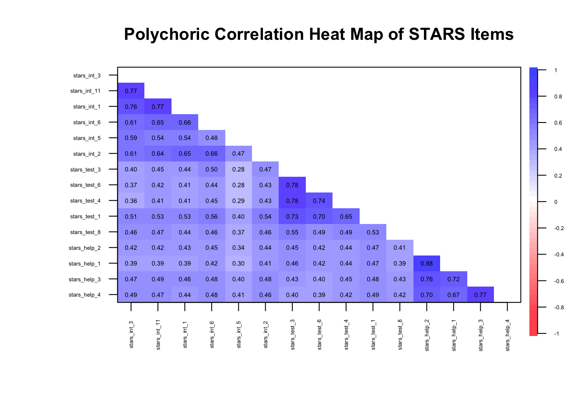
🤔 Do we have meaningful correlations?
Solution
Yes — items are clustering within their factors as expected (\(r_{pc}\) ≈ 0.3–0.8)…
… but we know from EFA week that there may be so much shared variance in these items that we’re dealing with unidimensionality.
Data Requirements
🤔 Does our data meet the data requirements (independent observations, scale type, sample size)?
Solution
Independent observations — yes, the data is from a single time-point with no other known dependencies
Scale type — yes, the data is ordinal
Sample size — yes, N = 3487
Missing Data
Missing data is common in survey research, but it needs careful attention because CFA estimates and fit indices can be biased if missingness is ignored.
Ignoring missing data (e.g., using listwise deletion blindly) can:
Reduce sample size → lower statistical power
Distort fit indices, factor loadings, and residual variances
Introduce bias if missingness is related to the latent trait
Step 1: Check the percentage of missing data at the item and the participant level
Typical rough guidelines:
< 5% — not a problem, proceed as normal
5–10% — usually manageable
10-20% — possibly manageable
> 20% — could be a big problem
Let’s see what we have in the STARS dataset.
# summary of missingness per item
1item_missing <- stars_data |>
2 dplyr::summarise(
3 dplyr::across(
4 dplyr::everything(),
5 ~ mean(is.na(.)) * 100
)
)
# summary of missingness per participant
6participant_missing <- stars_data |>
7 dplyr::mutate(
8 missing_pct = rowMeans(is.na(stars_data)) * 100
) |>
9 dplyr::count(missing_pct)- 1
-
Start with the
stars_datadataset to summarise missingness per item. - 2
-
Use
summarise()to reduce the dataset down to a single row of summary statistics. - 3
-
Apply a function across multiple columns using
across(). - 4
-
Target all columns in the dataset (
everything()). - 5
-
Calculate the percentage of missing values for each item (
mean(is.na(.)) * 100). - 6
-
Start with the
stars_datadataset to summarise missingness per participant. - 7
-
Use
mutate()to create a new column representing each participant’s missingness. - 8
-
Compute the row-wise mean of missingness (
rowMeans(is.na(stars_data))) and convert it to a percentage. - 9
-
Count the number of participants with each unique missingness percentage using
count()
🤔 Do we have a missing data problem with this dataset?
Solution
No — the maximum % missing for each item was 0.09 and for each participant was 6.67 and only for 7 participants. In such a large dataset, these numbers are negligible so we can proceed as normal.
If we had bigger problems, we’d have to carry out further checks and take appropriate action (see callout below for an overview).
What should you do if you have problematic levels of missing data?
This is a complex topic that, frankly, deserves a tutorial all to itself. We can’t get into the nitty-gritty here, but I want you to at least be aware that this is a thing and give you some resources in case you need to tackle it in the future.
What I’m about to say is not just relevant to CFA, by the way - missing data can cause problems in all your statistical models and inferences!
Okay, so you completed Step 1 and you’ve got large %s of missing data. What’s next?
Step 2: Look for systematic patterns, e.g., missing all responses from a certain sub-group
The next step is to examine how the missing data are distributed in your dataset.
Ideally, missing responses occur more or less randomly across participants and items. However, sometimes clear patterns emerge. For example:
A subgroup of participants (e.g., a particular demographic group) may be more likely to skip certain items
Participants may stop responding partway through a questionnaire (a drop-out pattern)
Certain items may be skipped much more frequently than others (perhaps because they are confusing or sensitive)
These kinds of patterns suggest that the missingness may be systematic rather than random, which can bias parameter estimates and distort conclusions if not handled appropriately.
At a basic level, you might examine:
Missingness by participant (e.g., some people skipping many items)
Missingness by item (e.g., problematic questions)
Whether missingness is associated with other variables in the dataset (this is something you may need to plan for in advance)
Step 3: Decide on a handling strategy
Once you have a sense of the missing data patterns, you need to decide how to handle them in your analysis.
Common approaches include:
Listwise deletion – removing cases with missing data
Pairwise deletion – using all available data for each estimate
Full Information Maximum Likelihood (FIML) – estimating model parameters using all available information
Multiple imputation – replacing missing values with plausible estimates based on other variables
Different approaches make different assumptions about why the data are missing. For example, many modern methods assume data are missing at random (MAR), meaning that the probability of missingness can be explained by observed variables in the dataset.
In structural equation modelling (including CFA), likelihood-based approaches such as FIML (full information maximum likelihood) or imputation methods are often preferred because they tend to produce less biased estimates than simple deletion methods.
However, you cannot use FIML with ordinal data - pairwise deletion or multiple imputation are your only options! 😞
The key takeaway is that missing data should rarely be ignored. When substantial missingness is present, it is important to diagnose the problem and choose an appropriate strategy before proceeding with your analysis.
Further Resources
Enders, C. K. (2022). Applied Missing Data Analysis. (2nd ed.). Guilford Press.
van Buuren, S. (2018). Flexible Imputation of Missing Data (2nd ed.). CRC Press. https://stefvanbuuren.name/fimd/
Graham, J. W. (2009). Missing data analysis: Making it work in the real world. Annual Review of Psychology, 60, 549–576. https://imaging.mrc-cbu.cam.ac.uk/statswiki/FAQ/emalgm?action=AttachFile&do=get&target=graham.pdf
Model Identification
You don’t need R for this — you can usually tell by counting parameters:
Step A: Count the Free Parameters
For a CFA model:
Factor loadings (usually all except the reference indicator if using
std.lv = TRUEor fixing the first loading [which we will do])Factor variances/covariances (for all latent factors)
Residual variances (for all observed items)
Thresholds/intercepts (for all continuous indicators, just intercepts; for ordinal, thresholds instead).
🤔 How many free parameters are there in our model?
Solution
Our model has:
interpret→ 6 indicatorstest→ 5 indicatorshelp→ 4 indicators
Total observed variables: 15
- Factor loadings — we will fix the first loading on each factor to 1, so we’re freely estimating 5
interpretindicators, 4testindicators, and 3helpindicators (so, 12 free factor loadings) - Factor variances & covariances — there are 3 factors, each with a variance (so, 3 variances); and a covariance between each pair (so, 3 covariances)
- Residual variances —1 for each observed variable (so, 15 residual variances)
- Thresholds (ordinal indicators) —
Each ordinal item with \(k\) categories (response options) has \(k-1\) thresholds
All items have 5 response categories, so there are 4 thresholds per item
Total thresholds = 15 × 4 = 60
Total free parameters: 12 (loadings) + 6 (factor var/cov) + 15 (residuals) + 60 (thresholds) = 93
Step B: Count Unique Pieces of Information (Covariances)
- For continuous observed variables, the number of unique elements in the sample covariance matrix is:
\[ \text{Number of unique covariances} = \frac{p(p+1)}{2} \]
- Your total free parameters must not exceed this. If you have more parameters than unique pieces of info, the model is under-identified.
🤔 How many unique pieces of information are there in our model?
🤔 Is the model over/under/just identified?
Solution
For 15 observed continuous variables, the sample covariance matrix contains:
\[ \text{Number of unique covariances} = \frac{p(p+1)}{2} = \frac{15(15+1)}{2} = 120 \]
Variances: 15 (one for each item)
Covariances: 105
Since 48 < 120, we have more than enough information to estimate the model.
The model is theoretically over-identified, which is what we want.
Step C: Check Simple Rules of Thumb
Each factor should have at least 3 indicators (for simple CFA) to avoid under-identification.
Fix the scale of each factor — either via marker variable (first loading = 1) or factor variance = 1 (
std.lv = TRUE) — we’ll come back to this when we’re preparing our model.
🤔 Does our model meet the rules of thumb?
Solution
Yes - we have at least 3 indicators and we will fix the scale in the next section.
Prepare the Model
To recap, to prepare the model, we must:
Specify the measurement model
Choose an estimator
Decide on factor scaling method
Specify the Measurement Model
We specify the measurement model using lavaan syntax.
Notice there are no functions here — the package isn’t really processing anything yet, we’re just giving it the map of our hypothesised factor structure which it will store for later use.
1stars_meas_mod <- '
2interpret =~ stars_int_3 + stars_int_11 + stars_int_1 + stars_int_6 + stars_int_5 + stars_int_2
test =~ stars_test_3 + stars_test_6 + stars_test_4 + stars_test_1 + stars_test_8
help =~ stars_help_2 + stars_help_1 + stars_help_3 + stars_help_4
3'- 1
-
stars_meas_mod <- '—stars_meas_modis the name we’re giving our measurement model object;'is a single quotation mark (not a backtick) which denotes the opening of our measurement model - 2
-
interpret =~ stars_int_3 + stars_int_11 + ...—interpretis the name we’re assigning the first factor;=~is an equals sign followed by a tilde, meaning “is measured by” inlavaan-ese;stars_int_3 + stars_int_11 + ...are the items loading onto the factor - 3
-
'to close the measurement model
Note that factors are correlated by default. To make them orthogonal, explicitly set it using factor_1 ~~ 0*factor_2 (the double tilde denotes a covariance and multiplying a factor by 0 fixes it to zero).
Decide on Factor Scaling Method
Latent factors don’t have natural units so we need a scaling method to fix their variance or a loading so that the model can estimate parameters uniquely.
There are two common approaches:
Marker Variable (Reference Indicator) Method
Pick one indicator (item) per factor and fix its loading to 1
This makes that item define the factor’s scale
e.g., if the indicator’s scale was 1-5, the factor’s scale would now be 1-5
lavaanfixes the first item on each factor to 1 by default
Pros: Intuitive; factor variance reflects the scale of the chosen indicator
Cons: You don’t get an estimate of the loading for the first indicator; choice of marker can slightly affect other parameter estimates, especially with uneven loadings
Unit Variance (Fixed Factor Variance) Method
- Fix the latent factor variance to 1, letting all loadings be freely estimated
Pros: Treats all indicators equally; often preferred in simulations or when comparing factors; you get estimates for all indicators
Cons: Factor scale becomes arbitrary—less intuitive in terms of the original items
Rule of Thumb:
For applied research where interpretation of factor scores matters (e.g., scale development) → marker method.
For simulation studies, structural models, or comparing factors → unit variance method.
🤔 Which factor scaling method is most appropriate for our purposes?
Solution
For scale development based on an EFA, you almost always want the marker (reference indicator) method.
Here’s why:
Interpretability of factor scores – The goal in scale development is usually to understand what each factor “means” in terms of your items. Fixing a loading to 1 ties the factor scale to a real, concrete item, making factor scores easier to interpret and communicate.
Consistency with EFA – EFA gives you a sense of which items dominate each factor. Using a marker indicator lets you preserve that dominant-item scale in your CFA.
Reporting and comparisons – You often want to report loadings relative to a meaningful baseline. Fixing the variance to 1 makes all loadings free, but then the factor itself is in an arbitrary unit — it’s harder to explain the factor to others.
Choose an Estimator
Choosing the right estimator is like picking the right tool for a job: the type of data and your model assumptions matter.
In CFA, the estimator determines how the model tries to reproduce the observed covariances and affects the accuracy of your parameter estimates and fit statistics.
Here’s a quick guide:
Maximum Likelihood (ML) – The workhorse. Assumes continuous variables and multivariate normality. Performs well with large samples. Often the default.
ML Robust / Satorra-Bentler (MLR) – Like ML but adjusts standard errors and fit statitics if data deviate from normality. A safe choice for continuous but skewed data.
Weighted Least Squares (WLS / WLSMV) – Designed for ordinal or categorical data (like Likert scales). Handles non-normality better but usually needs larger sample sizes for stability.
Diagonally Weighted Least Squares (DWLS) – Uses only the diagonal of the weight matrix. Less sensitive to sample size than full WLS. Good for ordinal variables when your sample isn’t huge.
Generalised Least Squares (GLS) – Less common; assumes multivariate normality, sensitive to outliers. Can be faster with small models.
Quick rule of thumb:
Continuous + roughly normal → ML
Continuous + non-normal → MLR
Ordinal / categorical + large sample → WLSMV
Ordinal / categorical + small sample → DWLS
🤔 Which estimator is most appropriate for our data?
Solution
WLSMV - we have ordinal data and a large sample
Fit and Check the Model
To recap, once we’ve fitted the model (and before we evaluate it), we’ll need to:
Check warnings
Check for improper solutions
Check potential misfit
Fit Model
To fit the model in R, we use the cfa() function from the lavaan package (Rosseel 2012).
1stars_fit <- lavaan::cfa(
2 stars_meas_mod,
3 data = stars_data,
4 estimator = "WLSMV",
5 ordered = names(stars_data),
6 std.lv = TRUE
)
stars_fit- 1
-
Call the
cfa()function from thelavaanpackage to fit a confirmatory factor analysis model. - 2
-
Provide the measurement model string (
stars_meas_mod) defined previously. - 3
-
Specify the dataset (
stars_data) containing the observed variables. - 4
-
Use the
WLSMVestimator, suitable for ordinal data. - 5
- Declare all variables in the dataset as ordered (ordinal), so the estimator handles them correctly.
- 6
-
Standardise the latent variable variances to 1 (
std.lv = TRUE) for identification.
lavaan 0.6-19 ended normally after 22 iterations
Estimator DWLS
Optimization method NLMINB
Number of model parameters 78
Used Total
Number of observations 3480 3487
Model Test User Model:
Standard Scaled
Test Statistic 1867.903 2937.622
Degrees of freedom 87 87
P-value (Chi-square) 0.000 0.000
Scaling correction factor 0.641
Shift parameter 24.755
simple second-order correction Inspect Warnings
lavaan likes to complain! After running cfa(), look at any console messages.
Typical warnings:
Warning: Some estimated correlations are > 1→ often due to multicollinearity or overfactoringWarning: model is not positive definite→ suggests linear dependencies or improper solutionsWarning: convergence not reached after … iterations→ optimizer struggled; may need different estimator or starting values or it may be underidentifiedFit indices may also be flagged if the model is just-identified (degrees of freedom = 0) or if sample size is tiny.
Check for Improper Solutions (Heywood Cases)
A Heywood case occurs when a CFA model produces impossible parameter estimates (typically negative error variances), usually indicating model misspecification, problematic items, or estimation instability.
It happens when the model attributes more variance to the latent factor than the item actually has, leaving the estimated unique variance negative. In other words, the model is trying too hard to explain the item with the factor.
Check for:
Negative variances (
var < 0)Loadings > 1 (sometimes > 1 is okay if standardised latent variables are used, but still worth checking)
# residual variances
1resid_var <- diag(lavaan::inspect(stars_fit, "theta"))
2resid_var
# standardised factor loadings
3std_load <- lavaan::standardizedSolution(stars_fit)
4std_load <- std_load[std_load$op == "=~", c("lhs","rhs","est.std")]
5std_load- 1
-
Extract the residual (error) variances for all observed variables from the CFA model using
inspect(..., "theta")and select the diagonal. - 2
- Print the residual variances; negative values may signal a Heywood case (impossible variance).
- 3
- Extract the standardised solution from the CFA fit, including factor loadings, residuals, and other standardised estimates.
- 4
-
Filter to keep only the factor loadings (
=~) and select the relevant columns: latent factor (lhs), observed variable (rhs), and standardised estimate (est.std). - 5
- Print the standardised factor loadings; any values greater than 1 suggest a potential Heywood case.
stars_int_3 stars_int_11 stars_int_1 stars_int_6 stars_int_5 stars_int_2
0.2836492 0.2479346 0.2718312 0.3556598 0.5990172 0.3798008
stars_test_3 stars_test_6 stars_test_4 stars_test_1 stars_test_8 stars_help_2
0.2170360 0.3107676 0.3113054 0.2666037 0.5145831 0.1278613
stars_help_1 stars_help_3 stars_help_4
0.1759491 0.2566255 0.3009430
lhs rhs est.std
1 interpret stars_int_3 0.846
2 interpret stars_int_11 0.867
3 interpret stars_int_1 0.853
4 interpret stars_int_6 0.803
5 interpret stars_int_5 0.633
6 interpret stars_int_2 0.788
7 test stars_test_3 0.885
8 test stars_test_6 0.830
9 test stars_test_4 0.830
10 test stars_test_1 0.856
11 test stars_test_8 0.697
12 help stars_help_2 0.934
13 help stars_help_1 0.908
14 help stars_help_3 0.862
15 help stars_help_4 0.836
More on Heywood Cases
A Heywood case is one of those moments in confirmatory factor analysis (CFA) where the model produces a statistically impossible parameter estimate. In practice, it usually means a negative variance estimate for an error term (or sometimes a factor variance). Variances can’t be negative in reality, so the result signals that something is wrong with the model or the data.
What a Heywood case looks like:
In CFA output (e.g., from lavaan), the most common sign is a negative residual variance for an indicator.
Example:
| Parameter | Estimate |
|---|---|
| Residual variance of item 4 | −0.12 |
This would imply that the item has less than zero unique variance, which is impossible.
You may also see:
standardised factor loading > 1
Negative factor variance
These are mathematically related manifestations of the same issue.
Why Heywood cases happen:
A Heywood case typically indicates model strain. Common causes include:
1. Model misspecification
The factor structure is wrong.
Examples:
An item loads on the wrong factor
A cross-loading that exists in reality is constrained to zero
Correlated errors are omitted
This is the most common cause in scale development work.
2. Extremely high loadings
If an item loads very strongly on a factor, the model may try to estimate its residual variance as negative.
Conceptually:
Item variance = common variance + unique variance
If the model estimates too much common variance, the remaining unique variance becomes negative.
3. Small sample size
With limited data, sampling fluctuations can push estimates outside the allowable range.
4. Highly correlated items or factors
Near-multicollinearity can destabilise estimation.
5. Poorly behaving items
Items with:
Very low variance
Extreme skew
Redundant wording
Can destabilise the model.
How to diagnose it:
Look for:
Negative residual variances
standardised loadings > 1
Very large standard errors
Warnings in the output
What you should not do:
A common temptation is to force the variance to be positive (e.g., constraining it to zero).
That’s usually treating the symptom, not the cause.
Before constraining anything, check whether the model itself is wrong.
What to do instead:
Typical steps:
- Check the standardised loadings
- Is one item loading \> .95 or \> 1?
- Inspect modification indices (more on this later)
- Is a cross-loading being suppressed?
- Check the EFA results
- Does the CFA model match the exploratory structure?
- Look at the problematic item
- Is it redundant or ambiguous?
- Consider removing the item
- Often the simplest solution in scale development
🤔Do we have any warnings, convergence issues, or Heywood cases?
Solution
Nope!
Check Potential Misfit
- Look out for large standardised residuals (> 4) in
residuals(stars_fit, type = "standardized")– large residuals hint at misfit.
1lavaan::residuals(stars_fit, type = "standardized")- 1
-
Compute the standardised residuals for the CFA model (
stars_fit)
$type
[1] "standardized"
$cov
strs_n_3 st__11 strs_n_1 strs_n_6 str__5 strs_n_2 strs_t_3
stars_int_3 0.000
stars_int_11 9.629 0.000
stars_int_1 7.926 7.788 0.000
stars_int_6 -10.821 -7.337 -5.671 0.000
stars_int_5 5.824 -0.857 -0.157 -3.427 0.000
stars_int_2 -9.855 -8.269 -3.628 4.936 -2.674 0.000
stars_test_3 -10.111 -7.318 -7.932 3.148 -6.782 0.832 0.000
stars_test_6 -9.992 -6.449 -7.375 -0.645 -5.389 -0.454 9.740
stars_test_4 -10.478 -7.433 -7.645 -0.076 -4.699 -0.610 10.891
stars_test_1 2.236 4.071 4.736 12.395 2.696 10.748 -5.103
stars_test_8 6.124 7.026 3.993 9.071 5.721 9.117 -7.084
stars_help_2 -6.933 -8.917 -7.467 -0.945 -1.805 -0.957 -4.550
stars_help_1 -8.614 -9.831 -9.081 -2.370 -4.091 -2.325 -2.633
stars_help_3 3.428 3.803 1.754 7.632 5.958 7.148 -3.063
stars_help_4 6.588 3.438 1.032 7.839 7.777 6.568 -3.814
strs_t_6 strs_t_4 strs_t_1 str__8 strs_h_2 strs_h_1 strs_h_3
stars_int_3
stars_int_11
stars_int_1
stars_int_6
stars_int_5
stars_int_2
stars_test_3
stars_test_6 0.000
stars_test_4 11.380 0.000
stars_test_1 -2.962 -11.951 0.000
stars_test_8 -9.659 -9.192 -9.202 0.000
stars_help_2 -5.040 -2.116 -0.532 1.809 0.000
stars_help_1 -3.873 -1.320 1.028 0.676 19.537 0.000
stars_help_3 -2.616 1.960 4.303 6.638 -11.768 -14.659 0.000
stars_help_4 -2.232 0.922 6.324 6.762 -16.352 -15.746 11.415
strs_h_4
stars_int_3
stars_int_11
stars_int_1
stars_int_6
stars_int_5
stars_int_2
stars_test_3
stars_test_6
stars_test_4
stars_test_1
stars_test_8
stars_help_2
stars_help_1
stars_help_3
stars_help_4 0.000
$mean
stars_int_3 stars_int_11 stars_int_1 stars_int_6 stars_int_5 stars_int_2
0 0 0 0 0 0
stars_test_3 stars_test_6 stars_test_4 stars_test_1 stars_test_8 stars_help_2
0 0 0 0 0 0
stars_help_1 stars_help_3 stars_help_4 <NA> <NA> <NA>
0 0 0 NA NA NA
<NA> <NA> <NA> <NA> <NA> <NA>
NA NA NA NA NA NA
<NA> <NA> <NA> <NA> <NA> <NA>
NA NA NA NA NA NA
<NA> <NA> <NA> <NA> <NA> <NA>
NA NA NA NA NA NA
<NA> <NA> <NA> <NA> <NA> <NA>
NA NA NA NA NA NA
<NA> <NA> <NA> <NA> <NA> <NA>
NA NA NA NA NA NA
<NA> <NA> <NA> <NA> <NA> <NA>
NA NA NA NA NA NA
<NA> <NA> <NA> <NA> <NA> <NA>
NA NA NA NA NA NA
$th
stars_int_3|t1 stars_int_3|t2 stars_int_3|t3 stars_int_3|t4 stars_int_11|t1
0 0 0 0 0
stars_int_11|t2 stars_int_11|t3 stars_int_11|t4 stars_int_1|t1 stars_int_1|t2
0 0 0 0 0
stars_int_1|t3 stars_int_1|t4 stars_int_6|t1 stars_int_6|t2 stars_int_6|t3
0 0 0 0 0
stars_int_6|t4 stars_int_5|t1 stars_int_5|t2 stars_int_5|t3 stars_int_5|t4
0 0 0 0 0
stars_int_2|t1 stars_int_2|t2 stars_int_2|t3 stars_int_2|t4 stars_test_3|t1
0 0 0 0 0
stars_test_3|t2 stars_test_3|t3 stars_test_3|t4 stars_test_6|t1 stars_test_6|t2
0 0 0 0 0
stars_test_6|t3 stars_test_6|t4 stars_test_4|t1 stars_test_4|t2 stars_test_4|t3
0 0 0 0 0
stars_test_4|t4 stars_test_1|t1 stars_test_1|t2 stars_test_1|t3 stars_test_1|t4
0 0 0 0 0
stars_test_8|t1 stars_test_8|t2 stars_test_8|t3 stars_test_8|t4 stars_help_2|t1
0 0 0 0 0
stars_help_2|t2 stars_help_2|t3 stars_help_2|t4 stars_help_1|t1 stars_help_1|t2
0 0 0 0 0
stars_help_1|t3 stars_help_1|t4 stars_help_3|t1 stars_help_3|t2 stars_help_3|t3
0 0 0 0 0
stars_help_3|t4 stars_help_4|t1 stars_help_4|t2 stars_help_4|t3 stars_help_4|t4
0 0 0 0 0 🤔Do we have any problematic standardised residuals?
Solution
Oh, hell yes — there are some very large standardised residuals that we should explore before moving on (and digging into this is actually a great way to learn more about what is going on under the hood of a CFA!).
Standardised Residuals
In CFA, a large residual usually means the model is doing a poor job reproducing the relationship between two variables.
More specifically, a raw residual is:
\[ Residual\ (raw) = Observed\ correlation - Model\ predicted\ correlation \]
So, it tells you how far off the model is for a particular relationship.
Raw residuals depend on the scale of the variables, so there’s no universal cutoff.
A value that looks big in one dataset might be trivial in another, so they’re rarely used for decision making.
In practice, we examine standardised residuals, which behave roughly like z-scores.
\[ Standardised\ Residual = \frac{Residual}{Standard\ Error\ of\ predicted\ covariance} \]
Typical guidelines:
| Standardised residual | Interpretation |
|---|---|
| < 2 | Small / acceptable |
| 2 – 4 | Potential misfit |
| > 4 | Large residual (clear local misfit) |
Absolute values above 4 are usually considered very large and definitely worth investigating.
What a large residual means substantively:
If a pair of items has a large residual, it means the model underestimates or overestimates the relationship between those items.
Common reasons include:
A missing cross-loading
Correlated error terms
An item that belongs on a different factor
Two items that are worded very similarly
The sign of the standardised residuals matter:
A large positive standardised residual means the observed correlation is higher than the model predicts
- The model underestimates the relationship between those items
A large negative standardised residual means the observed correlation is lower than the model predicts
- The model overestimates the relationship — it thinks the items are more strongly related than they actually are
So, let’s check our large standardised residuals in light of that:
Below is a heatmap so we can spot problematic items at a glance (optionally, see the callout below for the code) and a table explaining the potential problems and actions for the largest residuals.
There are quite a lot, but the issues are repeated, so just try and get a sense of what is going on with the first few negative and the first few positive residuals.
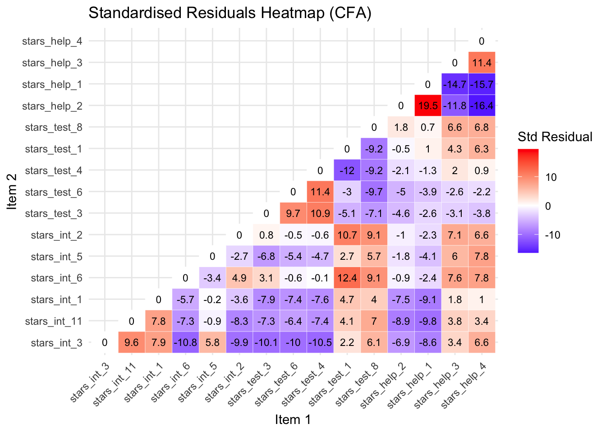
Standardised Residuals Heatmap Code
# extract standardized residuals
1resid_std <- lavaan::residuals(stars_fit, type = "standardized")$cov
# keep only the lower triangle
2resid_lower <- resid_std
resid_lower[upper.tri(resid_lower)] <- NA #<3> set upper triangle to NA
# convert to long format for plotting
4resid_long <- reshape2::melt(resid_lower, varnames = c("Item 1", "Item 2"), value.name = "Residual")
# remove NA rows (upper triangle)
5resid_long <- resid_long[!is.na(resid_long$Residual), ]
# load ggplot2 for plotting
6library(ggplot2)
# create heatmap
7ggplot(resid_long, aes(x = `Item 1`, y = `Item 2`, fill = Residual)) +
geom_tile(color = "white") + #<8> draw tiles for each item pair
geom_text(aes(label = round(Residual, 1)), size = 3) + #<9> annotate tiles with residuals
scale_fill_gradient2(low = "blue", mid = "white", high = "red", midpoint = 0) + #<10> color scale
theme_minimal() + #<11> clean minimal theme
theme(axis.text.x = element_text(angle = 45, hjust = 1)) + #<12> rotate x-axis labels
13 labs(title = "Standardised Residuals Heatmap (Lower Triangle Only)",
14 fill = "Std Residual")- 1
- Extract the covariance matrix of standardized residuals from the fitted CFA model.
- 2
- Copy the residuals matrix to prepare for masking the upper triangle.
- 4
-
Convert the matrix to long format using
reshape2::melt()for ggplot compatibility, naming the columns for clarity. - 5
-
Remove rows corresponding to
NAvalues (upper triangle) to keep only the lower triangle. - 6
-
Load
ggplot2for creating the heatmap. - 7
- Initialise the ggplot object, mapping item pairs to x/y and residual value to fill colour.
- 13
- Add a descriptive title for the heatmap.
- 14
- Label the fill legend to indicate these are standardised residuals.
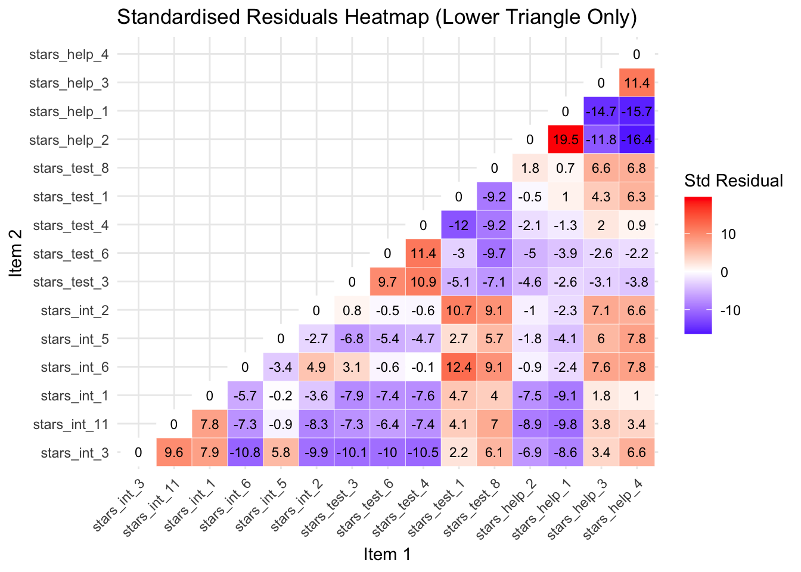
Standardised Residuals Table
| Item 1 | Item 2 | Std Resid | Subscales | Suggested Problem |
|---|---|---|---|---|
| stars_help_1 | stars_help_2 | 19.537 | Fear of Asking for Help | Items are almost identical in wording (“Going to ask my teacher individually” vs “Asking one of my teachers for help”), likely causing extreme shared variance |
| stars_help_4 | stars_help_2 | -16.352 | Fear of Asking for Help | Different social context (peer vs teacher); model overpredicts correlation |
| stars_help_4 | stars_help_1 | -15.746 | Fear of Asking for Help | Peer vs teacher help; overprediction indicates the model does not capture context differences |
| stars_help_3 | stars_help_1 | -14.659 | Fear of Asking for Help | Computer lab help vs teacher help; items conceptually different but share high variance |
| stars_test_1 | stars_test_4 | -11.951 | Test Anxiety | Studying for exam vs walking into exam room; very different behaviors but model overpredicts correlation |
| stars_help_3 | stars_help_2 | -11.768 | Fear of Asking for Help | Computer lab vs teacher context; model overpredicts correlation |
| stars_int_6 | stars_int_3 | -10.821 | Interpretation Anxiety | Interpreting probability vs reading article; different cognitive processes |
| stars_test_3 | stars_test_4 | 10.891 | Test Anxiety | Doing exam vs walking into room; related activities but model underpredicts correlation |
| stars_test_3 | stars_test_6 | 9.740 | Test Anxiety | Doing exam vs waking up on exam day; related but model underestimates correlation |
| stars_int_3 | stars_int_11 | 9.629 | Interpretation Anxiety | Reading article vs interpreting abstract; related but model underestimates correlation |
| stars_test_8 | stars_test_6 | 9.071 | Test Anxiety | Exam review vs waking up; model underpredicts correlation |
| stars_int_2 | stars_int_3 | -9.855 | Interpretation Anxiety | Making an objective decision vs reading article; model overpredicts correlation |
| stars_test_8 | stars_test_1 | -9.202 | Test Anxiety | Exam review vs studying; overprediction indicates redundancy |
| stars_test_8 | stars_test_4 | -9.192 | Test Anxiety | Exam review vs walking into exam; overprediction |
| stars_int_2 | stars_int_11 | -8.269 | Interpretation Anxiety | Making objective decision vs interpreting abstract; model overpredicts correlation |
| stars_int_3 | stars_int_1 | 7.926 | Interpretation Anxiety | Reading article vs table interpretation; related but not identical |
| stars_int_1 | stars_int_11 | 7.788 | Interpretation Anxiety | Table interpretation vs abstract interpretation; related items |
| stars_test_1 | stars_test_3 | -5.103 | Test Anxiety | Studying vs doing exam; moderate overprediction |
| stars_int_5 | stars_int_6 | -3.427 | Interpretation Anxiety | Reading advertisement vs interpreting probability; conceptually different |
| stars_test_1 | stars_test_6 | -2.962 | Test Anxiety | Studying vs waking up on exam day; minor overprediction |
Suggested Actions:
When the model underpredicts correlations (positive standardised residuals):
Merge redundant items into a single composite
Drop an item if nearly identical to another
Reword items to clarify context or nuance (you’d then need to collect new data to test the new items)
Allow a correlated error between the items to capture extra covariance (absorbs misfit, so gives the model flexibility to increase the predicted covariance, again matching the observed correlation better)
Add a cross-loading if the item conceptually belongs partially to another factor
When the model overpredicts correlations (negative standardised residuals):
Split the factor into subdimensions if items are conceptually distinct
Reword items to clarify differences (you’d then need to collect new data to test the new items)
Allow a correlated error between the items to capture residual covariance (absorbs misfit, so gives the model flexibility to reduce the predicted covariance slightly, matching the observed correlation better)
Crucially, whatever changes you make, you need to re-run the model and re-evalutate the standardised residuals after each one.
Many of the suggested actions are things we cannot feasibly address for teaching purposes (e.g., we cannot revise the items and collect new data), and we don’t have time to cover all issues, but let’s look at the largest positive and largest negative residual for illustrative purposes.
Largest Positive Standardised Residual
stars_help_1 and stars_help_2 had a huge standardised residual of 19.5, meaning the correlation is massively overestimated. Looking at the wording of the items (and their correlation), it is clear there is some considerable overlap and, therefore, redundancy — they are almost identical.
In this case, you’d want to either merge (create a composite) or drop one of the items. In scale development, it makes more sense to drop one of the items because that is how you’d use the scale going forward (you wouldn’t publish a scale and tell researchers they need to create a composite of two items).
Let’s drop stars_help_1 as it loaded lowest of the two onto the factor in our EFA. Then we’ll re-run the model and re-inspect our standardised residuals.
# drop the problematic item
stars_data2 <- stars_data |>
dplyr::select(-stars_help_1)
# re-specify the measurement model
stars_meas_mod2 <- '
interpret =~ stars_int_3 + stars_int_11 + stars_int_1 + stars_int_6 + stars_int_5 + stars_int_2
test =~ stars_test_3 + stars_test_6 + stars_test_4 + stars_test_1 + stars_test_8
help =~ stars_help_2 + stars_help_3 + stars_help_4
'
# refit the model
stars_fit2 <- lavaan::cfa(
stars_meas_mod2,
data = stars_data2,
estimator = "WLSMV",
ordered = names(stars_data2),
std.lv = TRUE)
# re-check standardised residuals
std_resid2 <- lavaan::residuals(stars_fit2, type = "standardized")$cov
# optional heatmap
resid_lower2 <- std_resid2
resid_lower2[upper.tri(resid_lower2)] <- NA
resid_long2 <- reshape2::melt(resid_lower2, varnames = c("Item 1", "Item 2"), value.name = "Residual")
resid_long2 <- resid_long2[!is.na(resid_long2$Residual), ]
library(ggplot2)
ggplot(resid_long2, aes(x = `Item 1`, y = `Item 2`, fill = Residual)) +
geom_tile(color = "white") +
geom_text(aes(label = round(Residual, 1)), size = 3) +
scale_fill_gradient2(low = "blue", mid = "white", high = "red", midpoint = 0) +
theme_minimal() +
theme(axis.text.x = element_text(angle = 45, hjust = 1)) +
labs(title = "Standardised Residuals Heatmap (Lower Triangle Only)",
fill = "Std Residual")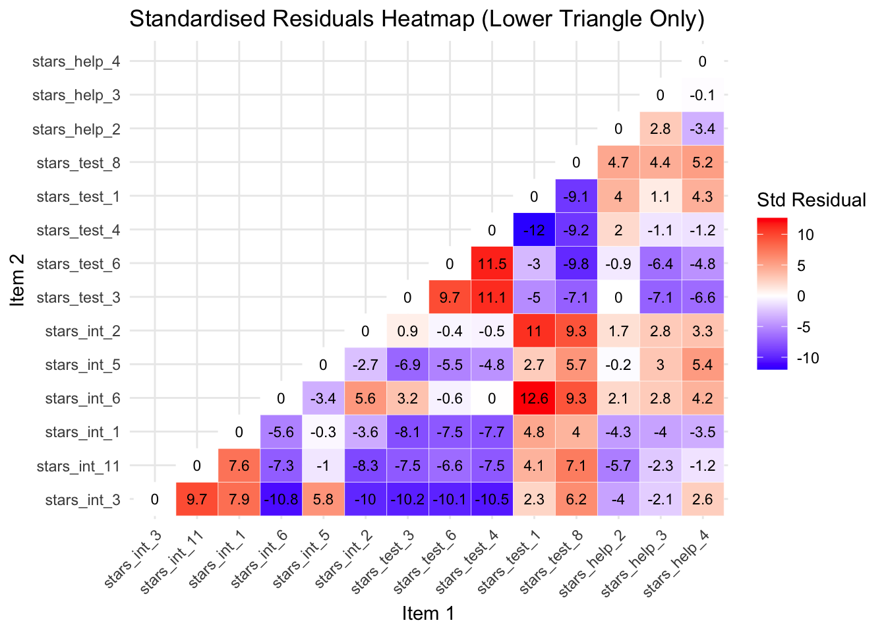
You can see from the new heatmap that removing stars_help_1 has also reduced the standardised residuals for the other stars_help item pairs. This is because the correlations among the remaining items are re-estimated when the model is refitted, so removing one problematic item changes the factor loadings and residual variances of the others, often redistributing the shared variance in a way that improves overall model fit.
Largest Negative Standardised Residual
The largest negative standardised residual is now between stars_int_6 (Interpreting the meaning of a probability value once I have found it) and stars_int_3 (Reading a journal article that includes some statistical analyses), with a whopping -11.1.
The negative residual indicates that the model predicts these items should be more strongly related than they actually are.
Although both items measure interpretation anxiety, they involve different kinds of cognitive tasks — reading and interpreting a specific type of statistical value, which may explain why students respond to them differently.
Addressing this properly would require revising the scale or collecting new data, so for teaching purposes we will simply note this misfit and proceed with the model.
Interpreting Parameter Estimates
Parameter estimates tell you whether the items measure the latent construct well.
The main ones to examine for scale development purposes are:
Standardised factor loadings (Std.all):
The loading is the correlation between the item and the latent factor and show how strongly each item reflects the latent factor.
For scale development this answers the core question: Does this item measure the construct well?
Interpretation guideline:
≥ .70 → excellent item
.30 – .49 → weak, consider revising or dropping
< .30 → poor indicator
R² values:
These show how much of the item’s variance is explained by the factor, or put another way, how much of the item is actually measuring the construct.
It is simply:
\[ R^2 = (\text{standardised loading})^2 \]
Interpretation guidelines:
R² = .70 → 70% of variance explained by the construct
Low R² → item contains lots of noise or unrelated variance
Factor Correlations:
These show how distinct the constructs are.
For scale development this informs discriminant validity.
Interpretation guidelines:
< .70 → factors likely distinct
>.85–.90 → constructs may not be separable
Parameters to (Mostly) Ignore:
For scale development purposes you usually don’t need to interpret:
Thresholds (replace intercepts in categorical CFA)
z-values
p-values for loadings (they’ll always be significant in large samples anyway)
Residual variances individually
Those are mostly statistical mechanics rather than scale evaluation.
So, let’s see what we’ve got…
The default output from the cfa() function is pretty sparse, so we typically plug our fitted model object (stars_fit2) into lavaan::summarise() to get more information.
We can also specify what types of information we want in our output.
1stars_summary <- lavaan::summary(
2 stars_fit2,
3 standardized = TRUE,
4 fit.measures = TRUE,
5 rsq = TRUE)
6stars_summary- 1
-
Calls the
summary()function from thelavaanpackage to produce a detailed summary of the fitted CFA model. - 2
-
The fitted model object created earlier using
lavaan::cfa(). This object contains the estimated parameters, fit statistics, and other model information. - 3
- Requests standardised estimates. This adds columns such as standardised factor loadings, which are easier to interpret because they are on a common scale (−1 to 1).
- 4
- Requests model fit indices (e.g., χ², CFI, TLI, RMSEA, SRMR) that help evaluate how well the model reproduces the observed covariance matrix.
- 5
- Requests R² values for the observed variables. These indicate how much of each item’s variance is explained by the latent factor(s).
- 6
- Prints the stored summary object to the console so the results appear in the output.
lavaan 0.6-19 ended normally after 23 iterations
Estimator DWLS
Optimization method NLMINB
Number of model parameters 73
Used Total
Number of observations 3480 3487
Model Test User Model:
Standard Scaled
Test Statistic 1223.091 2062.307
Degrees of freedom 74 74
P-value (Chi-square) 0.000 0.000
Scaling correction factor 0.598
Shift parameter 18.206
simple second-order correction
Model Test Baseline Model:
Test statistic 204135.909 72930.350
Degrees of freedom 91 91
P-value 0.000 0.000
Scaling correction factor 2.801
User Model versus Baseline Model:
Comparative Fit Index (CFI) 0.994 0.973
Tucker-Lewis Index (TLI) 0.993 0.966
Robust Comparative Fit Index (CFI) 0.952
Robust Tucker-Lewis Index (TLI) 0.941
Root Mean Square Error of Approximation:
RMSEA 0.067 0.088
90 Percent confidence interval - lower 0.064 0.085
90 Percent confidence interval - upper 0.070 0.091
P-value H_0: RMSEA <= 0.050 0.000 0.000
P-value H_0: RMSEA >= 0.080 0.000 1.000
Robust RMSEA 0.082
90 Percent confidence interval - lower 0.078
90 Percent confidence interval - upper 0.086
P-value H_0: Robust RMSEA <= 0.050 0.000
P-value H_0: Robust RMSEA >= 0.080 0.766
Standardized Root Mean Square Residual:
SRMR 0.047 0.047
Parameter Estimates:
Parameterization Delta
Standard errors Robust.sem
Information Expected
Information saturated (h1) model Unstructured
Latent Variables:
Estimate Std.Err z-value P(>|z|) Std.lv Std.all
interpret =~
stars_int_3 0.847 0.006 139.816 0.000 0.847 0.847
stars_int_11 0.868 0.006 155.925 0.000 0.868 0.868
stars_int_1 0.854 0.006 148.629 0.000 0.854 0.854
stars_int_6 0.800 0.008 103.682 0.000 0.800 0.800
stars_int_5 0.634 0.013 49.808 0.000 0.634 0.634
stars_int_2 0.786 0.008 96.885 0.000 0.786 0.786
test =~
stars_test_3 0.885 0.006 151.193 0.000 0.885 0.885
stars_test_6 0.831 0.007 122.502 0.000 0.831 0.831
stars_test_4 0.830 0.007 121.583 0.000 0.830 0.830
stars_test_1 0.855 0.007 126.675 0.000 0.855 0.855
stars_test_8 0.695 0.011 63.587 0.000 0.695 0.695
help =~
stars_help_2 0.836 0.007 114.270 0.000 0.836 0.836
stars_help_3 0.897 0.006 149.200 0.000 0.897 0.897
stars_help_4 0.858 0.007 121.827 0.000 0.858 0.858
Covariances:
Estimate Std.Err z-value P(>|z|) Std.lv Std.all
interpret ~~
test 0.671 0.011 60.238 0.000 0.671 0.671
help 0.645 0.012 55.227 0.000 0.645 0.645
test ~~
help 0.614 0.013 48.315 0.000 0.614 0.614
Thresholds:
Estimate Std.Err z-value P(>|z|) Std.lv Std.all
stars_int_3|t1 -0.562 0.023 -24.961 0.000 -0.562 -0.562
stars_int_3|t2 0.178 0.021 8.335 0.000 0.178 0.178
stars_int_3|t3 0.857 0.024 35.209 0.000 0.857 0.857
stars_int_3|t4 1.584 0.034 46.006 0.000 1.584 1.584
stars_nt_11|t1 -0.884 0.025 -36.008 0.000 -0.884 -0.884
stars_nt_11|t2 -0.097 0.021 -4.542 0.000 -0.097 -0.097
stars_nt_11|t3 0.548 0.022 24.397 0.000 0.548 0.548
stars_nt_11|t4 1.275 0.029 44.138 0.000 1.275 1.275
stars_int_1|t1 -0.833 0.024 -34.495 0.000 -0.833 -0.833
stars_int_1|t2 -0.078 0.021 -3.661 0.000 -0.078 -0.078
stars_int_1|t3 0.611 0.023 26.841 0.000 0.611 0.611
stars_int_1|t4 1.379 0.031 45.219 0.000 1.379 1.379
stars_int_6|t1 -0.870 0.024 -35.579 0.000 -0.870 -0.870
stars_int_6|t2 -0.074 0.021 -3.491 0.000 -0.074 -0.074
stars_int_6|t3 0.601 0.023 26.479 0.000 0.601 0.601
stars_int_6|t4 1.357 0.030 45.029 0.000 1.357 1.357
stars_int_5|t1 0.043 0.021 2.034 0.042 0.043 0.043
stars_int_5|t2 0.670 0.023 29.033 0.000 0.670 0.670
stars_int_5|t3 1.229 0.028 43.517 0.000 1.229 1.229
stars_int_5|t4 1.797 0.040 45.066 0.000 1.797 1.797
stars_int_2|t1 -0.931 0.025 -37.308 0.000 -0.931 -0.931
stars_int_2|t2 -0.112 0.021 -5.253 0.000 -0.112 -0.112
stars_int_2|t3 0.606 0.023 26.644 0.000 0.606 0.606
stars_int_2|t4 1.408 0.031 45.434 0.000 1.408 1.408
stars_tst_3|t1 -1.980 0.046 -43.001 0.000 -1.980 -1.980
stars_tst_3|t2 -1.214 0.028 -43.290 0.000 -1.214 -1.214
stars_tst_3|t3 -0.584 0.023 -25.820 0.000 -0.584 -0.584
stars_tst_3|t4 0.171 0.021 7.996 0.000 0.171 0.171
stars_tst_6|t1 -1.665 0.036 -45.849 0.000 -1.665 -1.665
stars_tst_6|t2 -0.923 0.025 -37.098 0.000 -0.923 -0.923
stars_tst_6|t3 -0.318 0.022 -14.687 0.000 -0.318 -0.318
stars_tst_6|t4 0.402 0.022 18.355 0.000 0.402 0.402
stars_tst_4|t1 -1.604 0.035 -45.990 0.000 -1.604 -1.604
stars_tst_4|t2 -0.946 0.025 -37.695 0.000 -0.946 -0.946
stars_tst_4|t3 -0.392 0.022 -17.952 0.000 -0.392 -0.392
stars_tst_4|t4 0.351 0.022 16.169 0.000 0.351 0.351
stars_tst_1|t1 -1.334 0.030 -44.808 0.000 -1.334 -1.334
stars_tst_1|t2 -0.599 0.023 -26.380 0.000 -0.599 -0.599
stars_tst_1|t3 0.076 0.021 3.559 0.000 0.076 0.076
stars_tst_1|t4 0.868 0.024 35.517 0.000 0.868 0.868
stars_tst_8|t1 -1.016 0.026 -39.439 0.000 -1.016 -1.016
stars_tst_8|t2 -0.341 0.022 -15.698 0.000 -0.341 -0.341
stars_tst_8|t3 0.237 0.021 11.041 0.000 0.237 0.237
stars_tst_8|t4 0.965 0.025 38.197 0.000 0.965 0.965
stars_hlp_2|t1 -0.869 0.024 -35.548 0.000 -0.869 -0.869
stars_hlp_2|t2 -0.124 0.021 -5.829 0.000 -0.124 -0.124
stars_hlp_2|t3 0.417 0.022 19.026 0.000 0.417 0.417
stars_hlp_2|t4 1.112 0.027 41.517 0.000 1.112 1.112
stars_hlp_3|t1 -0.770 0.024 -32.479 0.000 -0.770 -0.770
stars_hlp_3|t2 -0.024 0.021 -1.153 0.249 -0.024 -0.024
stars_hlp_3|t3 0.548 0.022 24.397 0.000 0.548 0.548
stars_hlp_3|t4 1.277 0.029 44.159 0.000 1.277 1.277
stars_hlp_4|t1 -0.512 0.022 -22.969 0.000 -0.512 -0.512
stars_hlp_4|t2 0.288 0.022 13.338 0.000 0.288 0.288
stars_hlp_4|t3 0.878 0.025 35.824 0.000 0.878 0.878
stars_hlp_4|t4 1.564 0.034 46.005 0.000 1.564 1.564
Variances:
Estimate Std.Err z-value P(>|z|) Std.lv Std.all
.stars_int_3 0.283 0.283 0.283
.stars_int_11 0.246 0.246 0.246
.stars_int_1 0.270 0.270 0.270
.stars_int_6 0.359 0.359 0.359
.stars_int_5 0.598 0.598 0.598
.stars_int_2 0.383 0.383 0.383
.stars_test_3 0.216 0.216 0.216
.stars_test_6 0.309 0.309 0.309
.stars_test_4 0.311 0.311 0.311
.stars_test_1 0.269 0.269 0.269
.stars_test_8 0.516 0.516 0.516
.stars_help_2 0.301 0.301 0.301
.stars_help_3 0.195 0.195 0.195
.stars_help_4 0.264 0.264 0.264
interpret 1.000 1.000 1.000
test 1.000 1.000 1.000
help 1.000 1.000 1.000
R-Square:
Estimate
stars_int_3 0.717
stars_int_11 0.754
stars_int_1 0.730
stars_int_6 0.641
stars_int_5 0.402
stars_int_2 0.617
stars_test_3 0.784
stars_test_6 0.691
stars_test_4 0.689
stars_test_1 0.731
stars_test_8 0.484
stars_help_2 0.699
stars_help_3 0.805
stars_help_4 0.736🤔 What do the parameter estimates tell us about our scale?
Solution
Factor Loadings:
All loadings are large and statistically significant.
Typical standardised loadings include:
Interpretation Anxiety Factor — .62 – .86
Test Anxiety Factor — .69 – .87
Help Factor — .83 – .90
Overall interpretation:
Most items show strong relationships with their factors
stars_int_5 (.62) and stars_test_8 (.69) are the weakest but still more than acceptable
R² Values:
Variance explained by the factors (indicative examples):
stars_help_3 → 80% explained
stars_test_3 → 76% explained
stars_int_5 → 38% explained
Overall interpretation:
- Most items are well explained by their factor, although stars_int_5 appears weaker
Factor Correlations:
Interpret ↔︎ Test = .65
Interpret ↔︎ Help = .63
Test ↔︎ Help = .61
Overall interpretation:
The factors are moderately correlated, suggesting they represent related aspects of statistics anxiety but are still distinct constructs.
Evaluating Model Fit
The output also gave us a range of estimates of overall model fit, known as fit indices.
Broadly speaking, fit indices tell us how well the implied covariance matrix (model) matches the observed one (data).
Some tell you how closely the model reproduces the data, some tell you how much better it is than doing nothing, and some tell you how parsimonious the model is.
No single index tells the full story — look at them together.
Absolute fit indices:
χ², RMSEA, SRMR, GFI
Tell you how well your model reproduces the data
Incremental / comparative indices:
- CFI, TLI, NNFI
- Compare your model to a baseline (null) model
Parsimony / model complexity indices:
AIC, BIC, PNFI, PGFI
Reward simpler models that fit nearly as wel
Only a few of these are routinely reported now — the field has converged on a small core set of most informative and robust indices.
Core Indices (almost always reported):
χ² test of model fit
Tests exact fit of the model
Almost always significant with large samples
Still reported for completeness
CFI (Comparative Fit Index)
Compares model to independence model
One of the most widely reported incremental indices
TLI (Tucker–Lewis Index)
Similar to CFI, but penalises model complexity more than CFI
Often reported alongside CFI
RMSEA (Root Mean Square Error of Approximation)
Measures approximate fit per degree of freedom
Usually reported with 90% confidence interval
SRMR (Standardised Root Mean Square Residual)
- Average standardised difference between observed and predicted correlations
Everything else is either outdated or mainly used for model comparison rather than fit evaluation.
Fit Index Cut-Offs (Rules of Thumb)
| Index | Acceptable / Good Fit |
|---|---|
| CFI / TLI | ≥ .95 good, ≥ .90 acceptable |
| RMSEA | < .05 good, .05–.08 reasonable |
| SRMR | < .08 good |
| χ² / df | < 2–3 acceptable |
Importantly, because WLSMV uses non-normal categorical data assumptions, the raw statistics are biased. The robust versions correct for this.
For WLSMV models the typical reporting set is:
Scaled χ²
Robust CFI
Robust TLI
Robust RMSEA (and CI)
SRMR
SRMR doesn’t have a robust version so the standard one is fine.
🤔 What do the fit indices tell us about our scale?
Here’s the output again:
lavaan 0.6-19 ended normally after 23 iterations
Estimator DWLS
Optimization method NLMINB
Number of model parameters 73
Used Total
Number of observations 3480 3487
Model Test User Model:
Standard Scaled
Test Statistic 1223.091 2062.307
Degrees of freedom 74 74
P-value (Chi-square) 0.000 0.000
Scaling correction factor 0.598
Shift parameter 18.206
simple second-order correction
Model Test Baseline Model:
Test statistic 204135.909 72930.350
Degrees of freedom 91 91
P-value 0.000 0.000
Scaling correction factor 2.801
User Model versus Baseline Model:
Comparative Fit Index (CFI) 0.994 0.973
Tucker-Lewis Index (TLI) 0.993 0.966
Robust Comparative Fit Index (CFI) 0.952
Robust Tucker-Lewis Index (TLI) 0.941
Root Mean Square Error of Approximation:
RMSEA 0.067 0.088
90 Percent confidence interval - lower 0.064 0.085
90 Percent confidence interval - upper 0.070 0.091
P-value H_0: RMSEA <= 0.050 0.000 0.000
P-value H_0: RMSEA >= 0.080 0.000 1.000
Robust RMSEA 0.082
90 Percent confidence interval - lower 0.078
90 Percent confidence interval - upper 0.086
P-value H_0: Robust RMSEA <= 0.050 0.000
P-value H_0: Robust RMSEA >= 0.080 0.766
Standardized Root Mean Square Residual:
SRMR 0.047 0.047
Parameter Estimates:
Parameterization Delta
Standard errors Robust.sem
Information Expected
Information saturated (h1) model Unstructured
Latent Variables:
Estimate Std.Err z-value P(>|z|) Std.lv Std.all
interpret =~
stars_int_3 0.847 0.006 139.816 0.000 0.847 0.847
stars_int_11 0.868 0.006 155.925 0.000 0.868 0.868
stars_int_1 0.854 0.006 148.629 0.000 0.854 0.854
stars_int_6 0.800 0.008 103.682 0.000 0.800 0.800
stars_int_5 0.634 0.013 49.808 0.000 0.634 0.634
stars_int_2 0.786 0.008 96.885 0.000 0.786 0.786
test =~
stars_test_3 0.885 0.006 151.193 0.000 0.885 0.885
stars_test_6 0.831 0.007 122.502 0.000 0.831 0.831
stars_test_4 0.830 0.007 121.583 0.000 0.830 0.830
stars_test_1 0.855 0.007 126.675 0.000 0.855 0.855
stars_test_8 0.695 0.011 63.587 0.000 0.695 0.695
help =~
stars_help_2 0.836 0.007 114.270 0.000 0.836 0.836
stars_help_3 0.897 0.006 149.200 0.000 0.897 0.897
stars_help_4 0.858 0.007 121.827 0.000 0.858 0.858
Covariances:
Estimate Std.Err z-value P(>|z|) Std.lv Std.all
interpret ~~
test 0.671 0.011 60.238 0.000 0.671 0.671
help 0.645 0.012 55.227 0.000 0.645 0.645
test ~~
help 0.614 0.013 48.315 0.000 0.614 0.614
Thresholds:
Estimate Std.Err z-value P(>|z|) Std.lv Std.all
stars_int_3|t1 -0.562 0.023 -24.961 0.000 -0.562 -0.562
stars_int_3|t2 0.178 0.021 8.335 0.000 0.178 0.178
stars_int_3|t3 0.857 0.024 35.209 0.000 0.857 0.857
stars_int_3|t4 1.584 0.034 46.006 0.000 1.584 1.584
stars_nt_11|t1 -0.884 0.025 -36.008 0.000 -0.884 -0.884
stars_nt_11|t2 -0.097 0.021 -4.542 0.000 -0.097 -0.097
stars_nt_11|t3 0.548 0.022 24.397 0.000 0.548 0.548
stars_nt_11|t4 1.275 0.029 44.138 0.000 1.275 1.275
stars_int_1|t1 -0.833 0.024 -34.495 0.000 -0.833 -0.833
stars_int_1|t2 -0.078 0.021 -3.661 0.000 -0.078 -0.078
stars_int_1|t3 0.611 0.023 26.841 0.000 0.611 0.611
stars_int_1|t4 1.379 0.031 45.219 0.000 1.379 1.379
stars_int_6|t1 -0.870 0.024 -35.579 0.000 -0.870 -0.870
stars_int_6|t2 -0.074 0.021 -3.491 0.000 -0.074 -0.074
stars_int_6|t3 0.601 0.023 26.479 0.000 0.601 0.601
stars_int_6|t4 1.357 0.030 45.029 0.000 1.357 1.357
stars_int_5|t1 0.043 0.021 2.034 0.042 0.043 0.043
stars_int_5|t2 0.670 0.023 29.033 0.000 0.670 0.670
stars_int_5|t3 1.229 0.028 43.517 0.000 1.229 1.229
stars_int_5|t4 1.797 0.040 45.066 0.000 1.797 1.797
stars_int_2|t1 -0.931 0.025 -37.308 0.000 -0.931 -0.931
stars_int_2|t2 -0.112 0.021 -5.253 0.000 -0.112 -0.112
stars_int_2|t3 0.606 0.023 26.644 0.000 0.606 0.606
stars_int_2|t4 1.408 0.031 45.434 0.000 1.408 1.408
stars_tst_3|t1 -1.980 0.046 -43.001 0.000 -1.980 -1.980
stars_tst_3|t2 -1.214 0.028 -43.290 0.000 -1.214 -1.214
stars_tst_3|t3 -0.584 0.023 -25.820 0.000 -0.584 -0.584
stars_tst_3|t4 0.171 0.021 7.996 0.000 0.171 0.171
stars_tst_6|t1 -1.665 0.036 -45.849 0.000 -1.665 -1.665
stars_tst_6|t2 -0.923 0.025 -37.098 0.000 -0.923 -0.923
stars_tst_6|t3 -0.318 0.022 -14.687 0.000 -0.318 -0.318
stars_tst_6|t4 0.402 0.022 18.355 0.000 0.402 0.402
stars_tst_4|t1 -1.604 0.035 -45.990 0.000 -1.604 -1.604
stars_tst_4|t2 -0.946 0.025 -37.695 0.000 -0.946 -0.946
stars_tst_4|t3 -0.392 0.022 -17.952 0.000 -0.392 -0.392
stars_tst_4|t4 0.351 0.022 16.169 0.000 0.351 0.351
stars_tst_1|t1 -1.334 0.030 -44.808 0.000 -1.334 -1.334
stars_tst_1|t2 -0.599 0.023 -26.380 0.000 -0.599 -0.599
stars_tst_1|t3 0.076 0.021 3.559 0.000 0.076 0.076
stars_tst_1|t4 0.868 0.024 35.517 0.000 0.868 0.868
stars_tst_8|t1 -1.016 0.026 -39.439 0.000 -1.016 -1.016
stars_tst_8|t2 -0.341 0.022 -15.698 0.000 -0.341 -0.341
stars_tst_8|t3 0.237 0.021 11.041 0.000 0.237 0.237
stars_tst_8|t4 0.965 0.025 38.197 0.000 0.965 0.965
stars_hlp_2|t1 -0.869 0.024 -35.548 0.000 -0.869 -0.869
stars_hlp_2|t2 -0.124 0.021 -5.829 0.000 -0.124 -0.124
stars_hlp_2|t3 0.417 0.022 19.026 0.000 0.417 0.417
stars_hlp_2|t4 1.112 0.027 41.517 0.000 1.112 1.112
stars_hlp_3|t1 -0.770 0.024 -32.479 0.000 -0.770 -0.770
stars_hlp_3|t2 -0.024 0.021 -1.153 0.249 -0.024 -0.024
stars_hlp_3|t3 0.548 0.022 24.397 0.000 0.548 0.548
stars_hlp_3|t4 1.277 0.029 44.159 0.000 1.277 1.277
stars_hlp_4|t1 -0.512 0.022 -22.969 0.000 -0.512 -0.512
stars_hlp_4|t2 0.288 0.022 13.338 0.000 0.288 0.288
stars_hlp_4|t3 0.878 0.025 35.824 0.000 0.878 0.878
stars_hlp_4|t4 1.564 0.034 46.005 0.000 1.564 1.564
Variances:
Estimate Std.Err z-value P(>|z|) Std.lv Std.all
.stars_int_3 0.283 0.283 0.283
.stars_int_11 0.246 0.246 0.246
.stars_int_1 0.270 0.270 0.270
.stars_int_6 0.359 0.359 0.359
.stars_int_5 0.598 0.598 0.598
.stars_int_2 0.383 0.383 0.383
.stars_test_3 0.216 0.216 0.216
.stars_test_6 0.309 0.309 0.309
.stars_test_4 0.311 0.311 0.311
.stars_test_1 0.269 0.269 0.269
.stars_test_8 0.516 0.516 0.516
.stars_help_2 0.301 0.301 0.301
.stars_help_3 0.195 0.195 0.195
.stars_help_4 0.264 0.264 0.264
interpret 1.000 1.000 1.000
test 1.000 1.000 1.000
help 1.000 1.000 1.000
R-Square:
Estimate
stars_int_3 0.717
stars_int_11 0.754
stars_int_1 0.730
stars_int_6 0.641
stars_int_5 0.402
stars_int_2 0.617
stars_test_3 0.784
stars_test_6 0.691
stars_test_4 0.689
stars_test_1 0.731
stars_test_8 0.484
stars_help_2 0.699
stars_help_3 0.805
stars_help_4 0.736
Solution
| Fit index | Value | Interpretation |
|---|---|---|
| χ²(74) | 1780.87, p < 0.001 | Significant χ² suggests the model does not perfectly reproduce the data—but with large N, χ² is almost always significant, so interpret cautiously (frankly, I’d ignore it altogether) |
| CFI | 0.956 (robust) | Comparative fit index above 0.95 → generally indicates good fit relative to a null model |
| TLI | 0.946 (robust) | Tucker-Lewis index near 0.95 → good fit again |
| RMSEA | 0.077 [0.073, 0.083] (robust) | Root mean square error of approximation below 0.08 → acceptable fit; the 90% CI [.073, .081] suggests precision |
| SRMR | 0.044 | Standardised root mean square residual below 0.05 → excellent fit in reproducing observed correlations |
Overall interpretation: Taken together, the indices indicate that the hypothesised factor structure is plausible, though not perfect.
That is typical in scale development contexts, but we also know that the scale has some problems that we’ve glossed over.
Model Refinement
Modification indices are statistics produced by CFA software that estimate how much the overall model χ² would decrease if a currently fixed parameter (e.g., a cross-loading, a correlated error) were freely estimated.
Essentially, they suggest where the model might be mis-fitting the data.
This is similar to what standardised residuals do, but whereas standardised residuals focus on the difference between observed and model-implied covariances for specific item pairs, modification indices indicate how much freeing a parameter would improve the overall model fit, offering a more proactive guide for potential model adjustments.
They can:
Highlight potential areas for model improvement
Identify specific item pairs with residual correlations that are unexpectedly high
Sometimes used to guide minor, theoretically justifiable refinements, such as adding a correlated error between two very similar items
However, they must be used cautiously — avoid:
Don’t blindly free parameters just because the MI is large; this is data-driven and can lead to overfitting
Avoid using MIs to retrofit your model to your current data, especially in scale development: modifications may not replicate in new samples
Always check that any suggested change makes theoretical sense before applying it
A simple rule of thumb:
MI > 10 or 15 → worth looking at (context-dependent)
EPC (expected parameter change) > 0.10 → potentially meaningful
Always check both numbers and theory before modifying your model though!
MIs are a diagnostic tool, not a prescription. They can be useful for exploratory purposes, but theory and replication should guide any actual model changes.
We can examine modification indices using lavaan’s modindices() function, like so:
- 1
-
Compute modification indices from the fitted CFA model (
stars_fit2) usinglavaan::modindices(). Settingsort. = TRUEorders them from largest to smallest, highlighting the parameters that could most improve model fit if freed. - 2
- Print the modification indices table to inspect potential model refinements.
lhs op rhs mi epc sepc.lv sepc.all sepc.nox
126 interpret =~ stars_test_8 312.832 -0.316 -0.316 -0.316 -0.316
125 interpret =~ stars_test_1 225.620 -0.258 -0.258 -0.258 -0.258
149 help =~ stars_test_8 188.496 -0.262 -0.262 -0.262 -0.262
123 interpret =~ stars_test_6 123.563 0.201 0.201 0.201 0.201
122 interpret =~ stars_test_3 104.780 0.192 0.192 0.192 0.192
148 help =~ stars_test_1 104.636 -0.191 -0.191 -0.191 -0.191
133 test =~ stars_int_6 104.421 -0.179 -0.179 -0.179 -0.179
124 interpret =~ stars_test_4 93.383 0.176 0.176 0.176 0.176
214 stars_test_3 ~~ stars_test_4 83.290 -0.100 -0.100 -0.385 -0.385
220 stars_test_6 ~~ stars_test_4 83.164 -0.100 -0.100 -0.322 -0.322
145 help =~ stars_test_3 80.598 0.181 0.181 0.181 0.181
146 help =~ stars_test_6 79.133 0.172 0.172 0.172 0.172
191 stars_int_6 ~~ stars_test_1 72.781 -0.114 -0.114 -0.367 -0.367
135 test =~ stars_int_2 71.996 -0.149 -0.149 -0.149 -0.149
213 stars_test_3 ~~ stars_test_6 64.482 -0.088 -0.088 -0.342 -0.342
150 stars_int_3 ~~ stars_int_11 55.147 -0.075 -0.075 -0.286 -0.286
208 stars_int_2 ~~ stars_test_1 54.097 -0.099 -0.099 -0.308 -0.308
226 stars_test_4 ~~ stars_test_1 52.492 0.093 0.093 0.320 0.320
130 test =~ stars_int_3 52.381 0.135 0.135 0.135 0.135
222 stars_test_6 ~~ stars_test_8 52.028 0.115 0.115 0.287 0.287
157 stars_int_3 ~~ stars_test_4 46.731 0.120 0.120 0.404 0.404
142 help =~ stars_int_6 46.496 -0.128 -0.128 -0.128 -0.128
227 stars_test_4 ~~ stars_test_8 44.536 0.105 0.105 0.261 0.261
152 stars_int_3 ~~ stars_int_6 43.527 0.085 0.085 0.268 0.268
209 stars_int_2 ~~ stars_test_8 43.332 -0.097 -0.097 -0.218 -0.218
155 stars_int_3 ~~ stars_test_3 43.313 0.118 0.118 0.479 0.479
192 stars_int_6 ~~ stars_test_8 41.807 -0.095 -0.095 -0.221 -0.221
156 stars_int_3 ~~ stars_test_6 41.234 0.110 0.110 0.373 0.373
231 stars_test_1 ~~ stars_test_8 38.914 0.093 0.093 0.249 0.249
144 help =~ stars_int_2 35.833 -0.114 -0.114 -0.114 -0.114
154 stars_int_3 ~~ stars_int_2 35.581 0.078 0.078 0.237 0.237
141 help =~ stars_int_1 34.426 0.114 0.114 0.114 0.114
151 stars_int_3 ~~ stars_int_1 33.545 -0.061 -0.061 -0.221 -0.221
163 stars_int_11 ~~ stars_int_1 30.476 -0.056 -0.056 -0.217 -0.217
132 test =~ stars_int_1 29.297 0.097 0.097 0.097 0.097
216 stars_test_3 ~~ stars_test_8 28.928 0.085 0.085 0.253 0.253
166 stars_int_11 ~~ stars_int_2 26.049 0.063 0.063 0.204 0.204
197 stars_int_5 ~~ stars_test_3 25.757 0.103 0.103 0.286 0.286
164 stars_int_11 ~~ stars_int_6 24.035 0.060 0.060 0.200 0.200
178 stars_int_1 ~~ stars_test_3 23.120 0.079 0.079 0.328 0.328
171 stars_int_11 ~~ stars_test_8 23.115 -0.070 -0.070 -0.197 -0.197
169 stars_int_11 ~~ stars_test_4 22.244 0.077 0.077 0.278 0.278
180 stars_int_1 ~~ stars_test_4 21.965 0.076 0.076 0.262 0.262
179 stars_int_1 ~~ stars_test_6 21.404 0.074 0.074 0.256 0.256
167 stars_int_11 ~~ stars_test_3 20.555 0.074 0.074 0.322 0.322
201 stars_int_5 ~~ stars_test_8 20.488 -0.080 -0.080 -0.144 -0.144
140 help =~ stars_int_11 19.793 0.085 0.085 0.085 0.085
147 help =~ stars_test_4 19.605 0.084 0.084 0.084 0.084
159 stars_int_3 ~~ stars_test_8 19.588 -0.067 -0.067 -0.174 -0.174
153 stars_int_3 ~~ stars_int_5 18.256 -0.064 -0.064 -0.155 -0.155
168 stars_int_11 ~~ stars_test_6 17.371 0.067 0.067 0.243 0.243
187 stars_int_6 ~~ stars_int_2 16.841 -0.048 -0.048 -0.130 -0.130
218 stars_test_3 ~~ stars_help_3 16.797 0.070 0.070 0.343 0.343
131 test =~ stars_int_11 16.584 0.073 0.073 0.073 0.073
219 stars_test_3 ~~ stars_help_4 16.523 0.073 0.073 0.305 0.305
198 stars_int_5 ~~ stars_test_6 16.151 0.078 0.078 0.181 0.181
204 stars_int_5 ~~ stars_help_4 14.880 -0.065 -0.065 -0.165 -0.165
237 stars_test_8 ~~ stars_help_4 14.801 -0.062 -0.062 -0.167 -0.167
224 stars_test_6 ~~ stars_help_3 14.157 0.063 0.063 0.256 0.256
215 stars_test_3 ~~ stars_test_1 13.866 0.045 0.045 0.188 0.188
139 help =~ stars_int_3 12.716 0.068 0.068 0.068 0.068
175 stars_int_1 ~~ stars_int_6 12.485 0.042 0.042 0.135 0.135
235 stars_test_8 ~~ stars_help_2 12.416 -0.056 -0.056 -0.143 -0.143
199 stars_int_5 ~~ stars_test_4 12.367 0.068 0.068 0.157 0.157
129 interpret =~ stars_help_4 11.611 -0.065 -0.065 -0.065 -0.065
172 stars_int_11 ~~ stars_help_2 11.608 0.053 0.053 0.195 0.195
137 test =~ stars_help_3 11.442 0.071 0.071 0.071 0.071
236 stars_test_8 ~~ stars_help_3 10.154 -0.050 -0.050 -0.158 -0.158
181 stars_int_1 ~~ stars_test_1 9.461 -0.043 -0.043 -0.158 -0.158
225 stars_test_6 ~~ stars_help_4 8.866 0.051 0.051 0.180 0.180
234 stars_test_1 ~~ stars_help_4 7.689 -0.043 -0.043 -0.161 -0.161
239 stars_help_2 ~~ stars_help_4 7.405 0.037 0.037 0.130 0.130
182 stars_int_1 ~~ stars_test_8 7.365 -0.041 -0.041 -0.109 -0.109
143 help =~ stars_int_5 7.298 -0.057 -0.057 -0.057 -0.057
238 stars_help_2 ~~ stars_help_3 7.114 -0.035 -0.035 -0.145 -0.145
232 stars_test_1 ~~ stars_help_2 7.048 -0.041 -0.041 -0.143 -0.143
195 stars_int_6 ~~ stars_help_4 6.678 -0.038 -0.038 -0.124 -0.124
183 stars_int_1 ~~ stars_help_2 6.602 0.040 0.040 0.142 0.142
170 stars_int_11 ~~ stars_test_1 6.491 -0.035 -0.035 -0.136 -0.136
160 stars_int_3 ~~ stars_help_2 6.181 0.040 0.040 0.136 0.136
177 stars_int_1 ~~ stars_int_2 5.929 0.029 0.029 0.091 0.091
184 stars_int_1 ~~ stars_help_3 5.465 0.036 0.036 0.156 0.156
186 stars_int_6 ~~ stars_int_5 5.357 0.038 0.038 0.082 0.082
136 test =~ stars_help_2 5.077 -0.042 -0.042 -0.042 -0.042
212 stars_int_2 ~~ stars_help_4 4.665 -0.033 -0.033 -0.104 -0.104
203 stars_int_5 ~~ stars_help_3 4.582 -0.036 -0.036 -0.106 -0.106
188 stars_int_6 ~~ stars_test_3 4.553 -0.033 -0.033 -0.118 -0.118
221 stars_test_6 ~~ stars_test_1 4.427 0.025 0.025 0.088 0.088
185 stars_int_1 ~~ stars_help_4 4.275 0.032 0.032 0.121 0.121
134 test =~ stars_int_5 4.063 0.042 0.042 0.042 0.042
127 interpret =~ stars_help_2 3.753 0.037 0.037 0.037 0.037
200 stars_int_5 ~~ stars_test_1 3.727 -0.034 -0.034 -0.085 -0.085
196 stars_int_5 ~~ stars_int_2 3.614 0.032 0.032 0.066 0.066
211 stars_int_2 ~~ stars_help_3 3.444 -0.028 -0.028 -0.101 -0.101
194 stars_int_6 ~~ stars_help_3 2.859 -0.024 -0.024 -0.092 -0.092
162 stars_int_3 ~~ stars_help_4 2.585 -0.024 -0.024 -0.088 -0.088
128 interpret =~ stars_help_3 2.435 0.033 0.033 0.033 0.033
158 stars_int_3 ~~ stars_test_1 2.299 -0.023 -0.023 -0.083 -0.083
228 stars_test_4 ~~ stars_help_2 1.759 -0.021 -0.021 -0.070 -0.070
193 stars_int_6 ~~ stars_help_2 1.745 -0.020 -0.020 -0.060 -0.060
173 stars_int_11 ~~ stars_help_3 1.735 0.019 0.019 0.088 0.088
161 stars_int_3 ~~ stars_help_3 1.520 0.019 0.019 0.079 0.079
210 stars_int_2 ~~ stars_help_2 1.345 -0.018 -0.018 -0.053 -0.053
138 test =~ stars_help_4 1.012 -0.019 -0.019 -0.019 -0.019
230 stars_test_4 ~~ stars_help_4 0.677 0.014 0.014 0.049 0.049
229 stars_test_4 ~~ stars_help_3 0.532 0.012 0.012 0.048 0.048
165 stars_int_11 ~~ stars_int_5 0.517 0.011 0.011 0.029 0.029
174 stars_int_11 ~~ stars_help_4 0.477 0.010 0.010 0.041 0.041
233 stars_test_1 ~~ stars_help_3 0.469 -0.011 -0.011 -0.046 -0.046
205 stars_int_2 ~~ stars_test_3 0.353 -0.009 -0.009 -0.033 -0.033
223 stars_test_6 ~~ stars_help_2 0.319 0.009 0.009 0.031 0.031
189 stars_int_6 ~~ stars_test_6 0.161 0.006 0.006 0.019 0.019
207 stars_int_2 ~~ stars_test_4 0.124 0.006 0.006 0.016 0.016
206 stars_int_2 ~~ stars_test_6 0.089 0.005 0.005 0.014 0.014
176 stars_int_1 ~~ stars_int_5 0.050 0.003 0.003 0.009 0.009
202 stars_int_5 ~~ stars_help_2 0.014 0.002 0.002 0.005 0.005
240 stars_help_3 ~~ stars_help_4 0.012 0.001 0.001 0.007 0.007
190 stars_int_6 ~~ stars_test_4 0.001 0.000 0.000 -0.001 -0.001
217 stars_test_3 ~~ stars_help_2 0.000 0.000 0.000 0.001 0.001What each column means:
| Column | Meaning |
|---|---|
lhs |
Left-hand side of the parameter — usually a latent factor or observed variable. |
op |
Type of parameter: =~ means factor loading, ~~ means covariance. |
rhs |
Right-hand side of the parameter — the item or variable paired with lhs. |
mi |
Modification Index — how much the overall chi-square would drop if this parameter were freed. Bigger → potentially bigger improvement in model fit. |
epc |
Expected Parameter Change — estimated size of the parameter if it were freed. Tells you how big the effect might be. |
sepc.lv |
Standardised EPC with respect to the latent variable scaling. |
sepc.all |
Standardised EPC considering all sources of variance. |
sepc.nox |
Standardised EPC ignoring latent factor scaling (focuses on observed variances). |
🤔Do the MIs suggest freeing any parameters and what should we do about them?
Solution
Practical interpretation for this model:
Several factor loadings on
interpretandhelp(e.g.,stars_test_8,stars_test_1) have high MIs (>80) and moderate EPCs (~0.23–0.27)This suggests these items may be slightly misfitting, but the changes are modest and generally consistent with the factor they are on
A couple of residual covariances (e.g.,
stars_test_3 ~~ stars_test_4) have also elevated MIs (~79–82) and small EPCs (~0.1), suggesting a minor shared variance not captured by the factors — often due to item wording or content overlap
Recommendation:
None of these suggested changes are critical. The MIs point out where the model is not perfectly reproducing the data, but the expected changes are modest.
Freely adding parameters should only be considered if theoretically justified (e.g., two items sharing similar content).
In practical terms, for scale development, you’d want to edit those items so they’re ready for use by other researchers, rather than tweaking the CFA model.
Otherwise, the current model is acceptable for reporting.
Report
You should report the following:
1. Model Specification
In-text: Describe your hypothesised factor structure in words
Plot/diagram: A path diagram of the CFA is extremely helpful for visualisation — you can show latent factors, observed items, and correlations between factors
Table: Usually not necessary unless you want a table listing each item under each factor for clarity
2. Estimator
In-text: Just one or two sentences describing your choice (e.g., “WLSMV estimator was used due to the ordinal nature of the items”)
Table/plot/diagram: Not needed unless comparing multiple estimators
3. Standardised Loadings
In-text: Summarise key points: average loadings, any low loadings (<0.3), and whether they support the hypothesised structure
Table: Present a table of standardised factor loadings, ideally with factor, item, loading, and possibly SE or p-value.
Plot/diagram: And/or, include loadings on the path diagram
4. Fit Indices
In-text: Summarise overall fit (“Fit was acceptable, CFI = 0.956, RMSEA = 0.077, indicating reasonable fit”)
Table: You could show chi-square, CFI, TLI, RMSEA (with CI), SRMR, etc. with a table, but this is more appropriate when you’re comparing models
Plot/diagram: Optional — sometimes people include a plot showing fit indices against recommended cut-offs, but it is not really necessary
5. Modifications
In-text: Briefly justify changes (“Residual covariance between items 3 and 4 was freed due to content overlap; MI = 78.8, EPC = 0.10”)
Table: If you freed parameters, show a small table with: parameter, MI, and EPC
Plot: Optional — can highlight in the path diagram which paths were added, e.g., dashed lines for modifications
We did some table work last week, so let’s spare ourselves and focus on the in-text write-up and path diagrams.
🤔 How would you write up the results of this CFA in-text?
Solution
We hypothesised a three-factor structure representing Interpretation Anxiety (interpret), Test Anxiety (test), and Help-Seeking (help). Each factor was measured by multiple items: six items for interpret, five items for test, and three items for help. Factors were allowed to correlate, reflecting expected relationships between these constructs.
The CFA was estimated using the DWLS estimator (Diagonally Weighted Least Squares) with robust standard errors and a mean- and variance-adjusted test statistic (WLSMV), appropriate for the ordinal nature of the items.
All items loaded strongly on their intended factors (standardised loadings ranging 0.619–0.896), supporting the hypothesised structure. Most items had substantial variance explained by their factor (R² > 0.6), though stars_int_5 (R² = 0.383) and stars_test_8 (R² = 0.476) were somewhat lower, suggesting modest measurement reliability.
Overall, the model demonstrated acceptable fit. Both CFI (0.956) and TLI (0.946) were close to the conventional threshold of 0.95. RMSEA (0.077) and SRMR (0.044) indicated reasonable approximation of the observed covariances, though the chi-square was significant, likely due to the large sample size (N = 3432).
Modification indices suggested a few potential improvements, mainly small residual covariances and minor cross-loadings. For example, freeing the covariance between stars_test_3 and stars_test_4 could reduce χ² slightly (MI = 78.8, EPC = 0.10). However, these changes were minor and not theoretically justified, so no modifications were made.
Path Diagrams
1. What a Path Diagram Shows in CFA
A path diagram is a visual representation of your measurement model. For CFA, it usually shows:
Latent factors (circles/ellipses) – the unobserved constructs you’re measuring.
Observed variables (squares/rectangles) – the questionnaire items, test scores, or measured indicators.
Factor loadings (arrows from factor → indicator) – standardised or unstandardised estimates of how strongly each item relates to the latent factor.
Residuals (arrows pointing to observed variables) – the unique variance of each item not explained by the factor.
Correlations between factors (curved double-headed arrows) – relationships between your latent constructs if specified.
The beauty of path diagrams is that they give you an at-a-glance understanding of the factor structure, strengths of relationships, and potential issues like weak loadings.
2. Using semPlot to Draw CFA Diagrams
semPlot is supposed to works seamlessly with lavaan CFA objects. For smaller, simple models, it usually works fine. For more complex models, it can be tricky to adjust the font sizes etc. in such a way that it is readable. Many a fine data analyst has given up and resorted to PowerPoint!
Let’s have a go though…
Tips for Clean Diagrams
Keep it simple: Only show what matters (e.g., factor loadings and factor correlations)
Use standardised loadings: Makes interpretation easier
Arrange layout thoughtfully:
tree2is great for “factors at the top, items below.”
Key Arguments
Here are just some of the arguments that are useful in customising your semPlots:
| Argument | Purpose / Tip |
|---|---|
whatLabels |
"std" shows standardised loadings (recommended for CFA teaching/interpretation) |
layout |
"tree2" gives a clear top-down CFA layout; alternatives: "circle", "spring" |
edge.label.cex |
Font size of loadings on arrows |
label.cex |
Font size of observed variable labels |
sizeMan / sizeLat |
Adjust node sizes for observed vs latent variables |
residuals |
Show item-specific residuals (TRUE for teaching clarity) |
exoCov |
Whether to show covariances of exogenous variables (FALSE for CFA) |
intercepts |
Show thresholds/intercepts (usually hidden for CFA diagrams) |
curvePivot |
Curves factor correlation arrows for clarity |
style |
"lisrel" produces clean, professional-looking diagrams |
nCharNodes |
Number of characters to display for variable names; 0 = full names |
mar |
Margin around the plot to avoid clipping labels |
rotation |
Adjusts node rotation/alignment to reduce overlap (optional) |
1stars_plot <- semPlot::semPaths(
2 stars_fit2,
3 whatLabels = "std",
4 layout = "tree2",
5 edge.label.cex = 0.8,
6 sizeMan = 4,
7 sizeLat = 8,
8 residuals = FALSE,
9 exoCov = FALSE,
10 intercepts = FALSE,
11 curvePivot = TRUE,
12 style = "lisrel",
13 nCharNodes = 0,
14 mar = c(5,5,5,5),
15 rotation = 2
)- 1
-
Call
semPaths()from thesemPlotpackage to visualise a CFA model. - 2
-
Provide the fitted CFA object (
stars_fit2) to plot. - 3
- Display standardised factor loadings on the diagram edges.
- 4
- Use a top-down tree layout suitable for CFA models.
- 5
- Set the size of edge labels (loadings) for readability.
- 6
- Set the size of observed variable nodes.
- 7
- Set the size of latent variable nodes.
- 8
- Do not display residual variances.
- 9
- Do not display covariances among exogenous variables (not relevant for CFA).
- 10
- Do not display intercepts or thresholds.
- 11
- Curve arrows between factors for clarity in correlations.
- 12
- Use a clean, classic LISREL-style diagram.
- 13
- Show full variable names (no abbreviation).
- 14
- Add margins around the plot to prevent clipping.
- 15
- Rotate the layout slightly to improve alignment and readability.
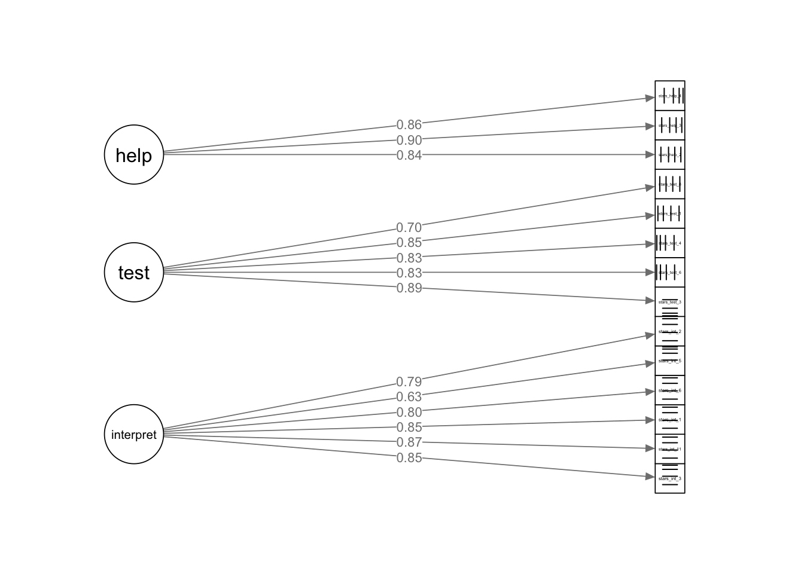
So, what do you think of our path diagram? It isn’t the worst I’ve seen, but the observed variable labels are unreadable. You can make them bigger with cex.label =, but that also enlarges the latent variable labels and in this case, they end up too big. semPlot doesn’t have an argument that just adjusts the observed variable nodes, so we’re back to elaborate work-arounds, like the EFA table. Sigh.
In my version, there are also some weird lines in the observed variable nodes, but that seems to be a glitch rather than something I can fix with arguments.
8.5 Part 3: Exercises & Worksheet
Code Recognition Tasks
Here’s all the code from this tutorial. Can you remember what each line of each code chunk does? Are there any code chunks that you struggle to make sense of (you would be forgiven for skipping over some of the detail in the formatted loadings table!)? Make sure to revisit the section in which it is used and take notes.
stars_data <- readr::read_csv(here::here("data/stars_cfa_data.csv")) |>
dplyr::select(stars_int_3,
stars_int_11,
stars_int_1,
stars_int_6,
stars_int_5,
stars_int_2,
stars_test_3,
stars_test_6,
stars_test_4,
stars_test_1,
stars_test_8,
stars_help_2,
stars_help_1,
stars_help_3,
stars_help_4)
stars_corr <- psych::polychoric(stars_data)$rho
stars_heatmap <- psych::cor.plot(
stars_corr,
upper = FALSE,
diag = FALSE,
cex = 0.3,
cex.axis = 0.4,
las = 2,
main = "Polychoric Correlation Heat Map of STARS Items"
)
stars_data |>
dplyr::summarise(
dplyr::across(
dplyr::everything(),
~ mean(is.na(.)) * 100
)
)
stars_data |>
dplyr::mutate(
missing_pct = rowMeans(is.na(stars_data)) * 100
) |>
dplyr::count(missing_pct)
stars_meas_mod <- '
interpret =~ stars_int_3 + stars_int_11 + stars_int_1 + stars_int_6 + stars_int_5 + stars_int_2
test =~ stars_test_3 + stars_test_6 + stars_test_4 + stars_test_1 + stars_test_8
help =~ stars_help_2 + stars_help_1 + stars_help_3 + stars_help_4
'
stars_fit <- lavaan::cfa(
stars_meas_mod,
data = stars_data,
estimator = "WLSMV",
ordered = names(stars_data),
std.lv = TRUE)
stars_fit
resid_var <- diag(lavaan::inspect(stars_fit, "theta"))
resid_var
std_load <- lavaan::standardizedSolution(stars_fit)
std_load <- std_load[std_load$op == "=~", c("lhs","rhs","est.std")]
std_load
resid_std <- lavaan::residuals(stars_fit, type = "standardized")$cov
stars_data2 <- stars_data |>
dplyr::select(-stars_help_1)
stars_meas_mod2 <- '
interpret =~ stars_int_3 + stars_int_11 + stars_int_1 + stars_int_6 + stars_int_5 + stars_int_2
test =~ stars_test_3 + stars_test_6 + stars_test_4 + stars_test_1 + stars_test_8
help =~ stars_help_2 + stars_help_3 + stars_help_4
'
stars_fit2 <- lavaan::cfa(
stars_meas_mod2,
data = stars_data2,
estimator = "WLSMV",
ordered = names(stars_data2),
std.lv = TRUE)
std_resid2 <- lavaan::residuals(stars_fit2, type = "standardized")$cov
stars_summary <- lavaan::summary(
stars_fit2,
standardized = TRUE,
fit.measures = TRUE,
rsq = TRUE)
stars_summary
stars_mi <- lavaan::modindices(stars_fit2, sort. = TRUE)
stars_mi
stars_plot <- semPlot::semPaths(
stars_fit2,
whatLabels = "std",
layout = "tree2",
edge.label.cex = 0.8,
sizeMan = 4,
sizeLat = 8,
residuals = FALSE,
exoCov = FALSE,
intercepts = FALSE,
curvePivot = TRUE,
style = "lisrel",
nCharNodes = 0,
mar = c(5,5,5,5),
rotation = 2,
)Worksheet
Described below is a simulated dataset for an imaginary scale. Have a read through, complete the coding tasks in Posit Cloud, and then see if you can correctly answer the worksheet questions below.
Digital Life Balance Scale (DLBS) Data
The `dlbs.csv` dataset contains (simulated) responses from 400 participants to a 20-item Digital Life Balance Scale (DLBS).
Each item uses a 1–5 Likert scale (1 = strongly disagree, 5 = strongly agree). There are no reverse-scored items.
The scale is designed to capture different aspects of people’s experiences with their digital lives.
Last week, our EFA revealed the following structure:

You are going to be testing the factor structure identified in the EFA using.
The retained items and their corresponding factors are below for reference (note that dlbs_20 has been removed):
| Item | Factor | Wording |
|---|---|---|
| dlbs_9 | Digital Overload | I feel left out when I see others posting about events. |
| dlbs_10 | Digital Overload | I feel judged based on my online presence. |
| dlbs_6 | Digital Overload | I feel pressure to present myself positively online. |
| dlbs_7 | Digital Overload | I compare my life to others on social media. |
| dlbs_8 | Digital Overload | I worry about how many likes or reactions I receive. |
| dlbs_1 | Digital Self-Control | I feel overwhelmed by the number of notifications I receive. |
| dlbs_5 | Digital Self-Control | My online activity leaves me feeling exhausted. |
| dlbs_4 | Digital Self-Control | I find it hard to switch off from digital devices. |
| dlbs_2 | Digital Self-Control | I struggle to keep up with messages across different platforms. |
| dlbs_3 | Digital Self-Control | I often feel mentally drained after spending time online. |
| dlbs_14 | Online Social Pressure | I check my phone without thinking about it. |
| dlbs_15 | Online Social Pressure | I feel in control of my online habits. |
| dlbs_11 | Online Social Pressure | I can easily limit my screen time when I need to. |
| dlbs_13 | Online Social Pressure | I lose track of time when using apps. |
| dlbs_12 | Online Social Pressure | I set boundaries around when I use digital devices. |
| dlbs_16 | Online Engagement & Enjoyment | I enjoy interacting with others online. |
| dlbs_18 | Online Engagement & Enjoyment | Being online helps me feel connected to others. |
| dlbs_19 | Online Engagement & Enjoyment | I learn useful things through digital platforms. |
| dlbs_17 | Online Engagement & Enjoyment | I find digital spaces inspiring. |
Coding Tasks
- Read in the
dlbs.csvdata and removedlbs_20 - Produce a correlation heat map
- Check missing data per item
- Specify the measurement model
- Fit the model
- Check standardised residuals
- Print the model output summary
- Obtain modification indices
- Produce a semPlot of the model
Worksheet Questions
There are no interactive questions this week - they’re nice, but a bit glitchy, and open questions are better suited to this kind of analysis.
Instead, write your answers in the Quarto document and heck your answers in the accompanying tutorial solutions file in Posit Cloud.
Pre-Analysis Checks
- What is the theoretical model you’re fitting?
- Does the data meet all the data requirements?
- Do you have meaningful covariances?
- Does the data meet the distributional assumptions?
- What percentages of missing data are there at the item and participant level?
- What action would you take in this case?
- Is the model identified?
Model Preparation
- Which estimator is appropriate for this data?
- Which scaling method will you use?
Model Checks
- Are there any convergence issues?
- Are there any other warnings?
- Is there evidence of any Heywood cases?
- Are there any problematic standardised residuals?
- What action would you take in this case?
Parameter Estimation (Local Fit)
- What do you infer from the factor loadings?
- What do you infer from the R^2?
- What do you infer from factor correlations?
Model Fit (Global Fit)
- What do you infer from the chi-square value?
- What do you infer from the CFI and TLI?
- What do you infer from the RMSEA?
- What do you infer from the SRMR?
Modifications
- What do you infer from the modification indices?
- What action would you take in this case?
Reporting
- How would you report the results from this EFA in-text?